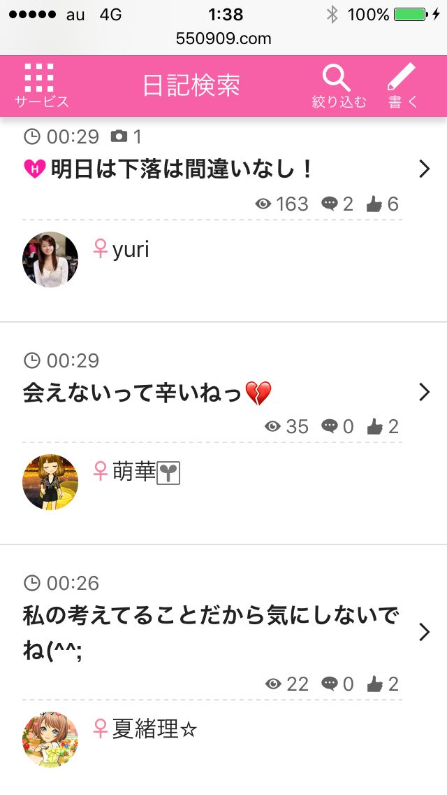
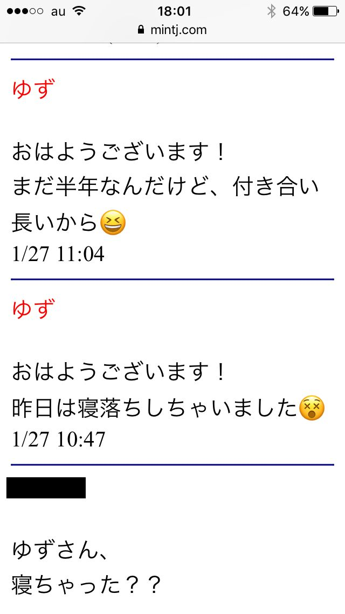
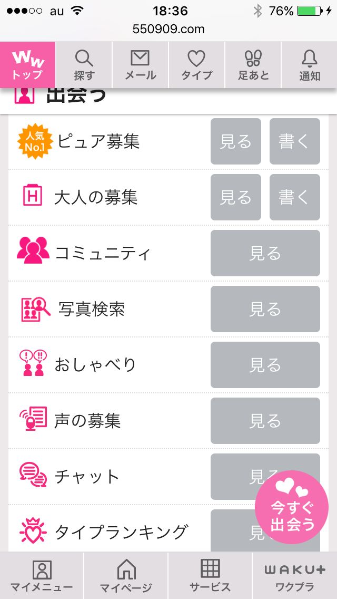
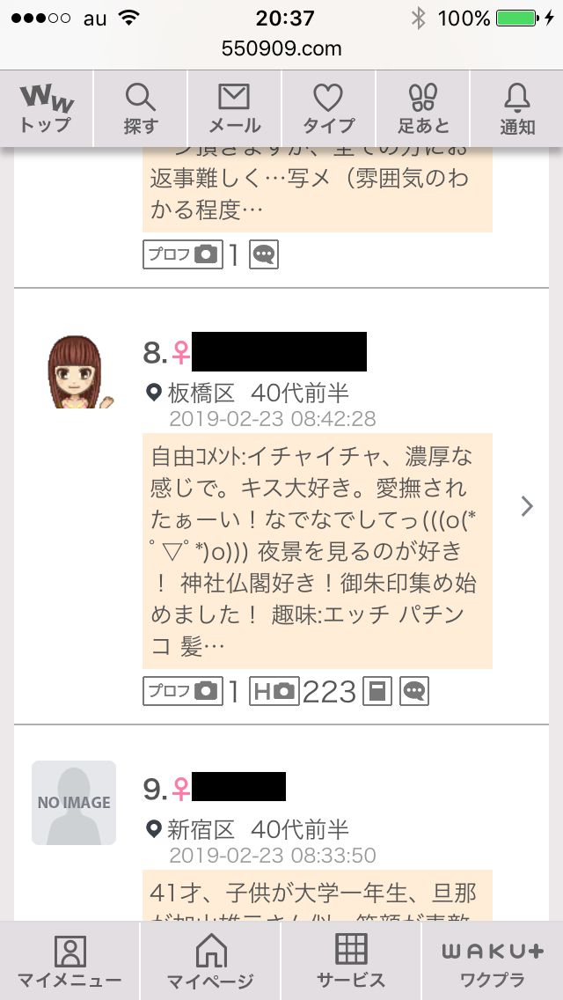
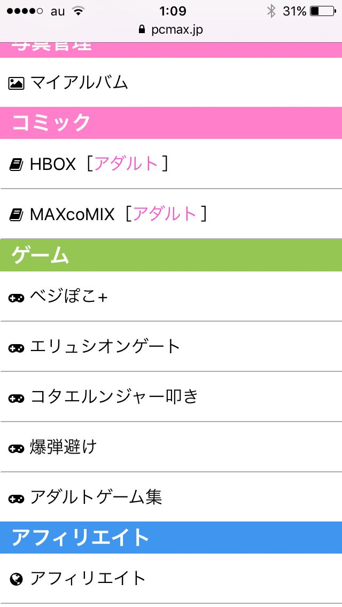
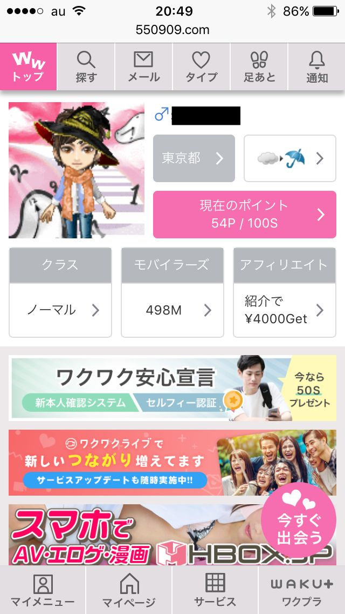

| 【2019年最新】出会い系サイト攻略法: 出会い系サイトに総額100万円使った私が語る！女性を絶対に落とす！成功法則101 | |
| インポ番長 | |
| (2019) | |
はじめに
この度は当書籍を購入して頂きありがとうございます。
著者のインポ番長です。
私は以下のブログとメールマガジンを運営しています。
【勃起は正義】インポ番長
メールマガジン インポ番長のニュースレター
https://1lejend.com/stepmail/kd.php?no=JqOvyywc
ブログではインポ改善、ポコチン増大に関することや出会い系攻略法について詳しく書いています。
私は出会い系サイト利用歴が３年ほどありまして、その中で成功や失敗を数多くしてきました。
綺麗な既婚女性と出会い、良い関係になり、セックスするという経験もできましたし、実際に会ってみたらプロフィール写真と程遠い巨漢女性が来たりなど、成功や失敗をたくさんしてきました。
この本は私の体験談を元に事実を書いていきます。
出会い系サイトで女性と効率的に出会う攻略法や業者やキャッシュバッカーを見極める方法や私がリアルに失敗した体験談も詳しく書いていきます。
私の経験はあなたに必ず役に立つはずです。
無駄なお金を使うことなく、スマートに女性と出会うことができるでしょう。私は今まで出会い系サイトで１００万円近くお金を使ってきました。そこで得た知識やノウハウはとても多いです。
私の知識は必ずあなたに役になっていきます。ぜひ参考にして頂きたいと思います。
それでは出会い系サイト攻略法をあなたに伝授していきます。
もくじ
プロフィールを少し充実させるだけで出会える確率が１０倍アップ！
気をつけたほうがいい女その５ プロフィール検索では出てこない女性
失敗談１ 複数の女性たちとメールのやり取りをして間違えてしまった・・・
注意！こんな男にはなるな！こんな男は絶対に出会えないしヤれないぞ！
業者とキャッシュバッカーの魔の手から逃れろ！彼らを見極める方法
成功ポイント１ 出会い系サイトは、プロフィールで始まりプロフィールで終わります！！
出会い系サイトの特徴と選ぶべきタイプ
世の中には職場や学校などで、女性と知り合う機会が少ない男性はかなりいて、 彼女がいない歴が数年になる人や、今までにほとんど女性と付き合ったことがない人もいます。
女性も同様で、やはり職場や学校には男性がほとんどいないケースもあり、彼が欲しいんだけどなかなか男性と知り合う機会が少ない女性たちも多そうです。
そんな人達に人気がありますのが出会い系サイトで、大手のハッピーメールやPCMAXなどは１０００万人を超える利用者がいる感じです。
さまざまなメディアやネット等で、「出会い系サイトで何十人と会えた」ですとか「簡単に仲良くなれる」ような記事が目立ちますが、はじめて利用する人達は、
「本当に誰でもそんなに簡単に知り会えるの」「知り合ったらすぐに会えるのかな？」と不安な気持ちになる人が多そうです。
出会い系サイトを利用する人の年齢はとても幅広く、２０代の男女から５０代の年代までさまざまで、それぞれの年代によっても利用する目的が違ってきます。
ここ数年に利用者が急増しています。
２０代は、出会い系サイトで趣味や遊び仲間を見つけたいと考えている人が多く、女性たちも「遊び友達や一緒に話が出来る相手が欲しく、それから恋愛につながればうれしいんだけど！」 的な感覚での利用しています。
これが３０代になってきますと結婚相手を意識して真面目なお付き合いの出来る相手を見つけたいと思っている人達もいれば、逆に結婚しているんだけどご主人とは冷え切った関係で、こっそりと秘密の恋を楽しんでみたいと考えている人も多いです。
そして４０代から５０代の利用者は圧倒的に、「もう一度素敵な恋をしてみたい」という、いわゆる不倫願望が目的で利用している人が多いです。
出会い系サイトは大小合わせますと星の数ぐらい有ると言われていて、大きく分けると完全無料タイプ、男性のみ有料の課金タイプ、使い放題の定額タイプに分かれます。
それぞれのタイプにはメリットとデメリットがあり、自分の目的にあったタイプの出会い系サイトを選ぶことが大切です。
完全無料タイプですと、当然ながら費用は一切かかりませんが、どちらかと言うと友達探しに向いていて、恋愛探しが目的の人にはあまりおすすめできないです。
定額制タイプは使い放題なので割安感を感じますが、特に女性にとっては多くの男性からの半端ない数のメールの嵐の可能性が高く、男性にとっても女性と知り合える機会が少ないと思います。
やはり恋愛を前提として男性や女性と知り合いたいと思っている人には、 課金タイプの出会い系サイトがおすすめ です。
さまざまな出会い系ランキングに紹介されていますハッピーメールやPCMAXなどは大部分が課金タイプの出会い系サイトで、他のタイプと比較しても女性と知り合えるチャンスが圧倒的に高いです。
出会い系サイトを代表する老舗の大手サイトは、ハッピーメール、PCMAX、ワクワクメールなどがあり、それぞれに特徴があります。
まずハッピーメールは、いろいろな雑誌やメディアでも紹介されている日本最大級の出会い系サイトで、最近は若い世代が遊び友達を見つける感じのサイトです。
こんな感じのサイトです。
ワクワクメールも大手の出会い系サイトで、サイトにはアプリやゲームなどのアメニティが充実していて少し前までは一番知り合いやすいサイトとして有名でした。
PCMAXは、出会い系サイトの中でもちょっとアバンチュールの恋などを楽しみたいと思っている人たちに人気で、キャラクターの女性もオシャレで男性たちの中では恋愛経験のある女性と遊んだりする事が出来るサイトとして今でも絶大の人気を誇っています。
どのサイトも最近は普通のSNSのように動画やゲームなどのいろいろなアプリが充実していて、かつてのような男性目線のサイトから明るくかわいい女性目線で作られていて、アバターや占いなどを楽しみながら利用出来るサイトに変わっていて、女性たちの利用がどんどん増えています。
出会い系サイトは、掲示板などで全国の会員に恋愛相手だけでなく、趣味友達やサークル仲間などを見つける事も出来ますし、日記やつぶやきなどで同性の友達を見つける事にも利用されています。
少し前までのように、コッソリと恋の相手を見つけるだけでなく、普通のSNSのように人とのコミュニケーションを取ったり出来るのも魅力で、思っている以上に周辺の人たちがコッソリと登録して楽しんでいます。
大手の出会い系サイトは、年齢認証やサイト管理も優れていて、個人情報などやセキュリティ対策も対策も万全に行われていますので、誰でも安心して利用できるのが人気の理由です。
まずは大手出会い系サイトを利用して課金タイプの出会い系を利用すると良いでしょう。
効率よく出会うために「日記機能」をフル活用する
少し前までは、出会い系サイトはどこがエロくて、男性たちのためのものでした。サイトの作りも、男性目線で女性の裸やナンパをする方法などが大きくサイト内でも紹介されていました。
利用する男性たちも、女性をサイト内でナンパしてエッチをする事が目的にしている人たちが使いやすい機能でした。
しかし最近は女性たちの利用が急増していて、すっかり出会い系サイトの中身が女性たちの意識したデザインやキャラクターに変わってきていて、一般のSNSとほとんど区別がつかなくなっています。
それでもさすがに出会い系サイトを利用する人の多くは、恋の相手を見つけて楽しみたいと思っている人が大半ですので、登録している人たちの目的がSNSとは明らかに違います。
出会い系サイトの仕組みを簡単に説明しますと、法律で利用する年齢制限が義務化されていて、サイトに登録をしてから免許証の画像などをサイト運営にメール送信をして初めていろいろな機能が使えるようになります。
このような画像を送ります。
詳しい住所や顔は紙等で隠し、生年月日とどこから発行されているかが分かれば承認されます。個人情報は伝える必要はありません。
それからまずは自分のプロフィールなどを作成して、相手探しを行ないます。ほとんどの大手の出会い系サイトなら、年齢やスタイルから住んでいるエリアや結婚の有無など自分の好みの項目を設定すると、登録している対象の女性のプロフィールが見れるシステムです。
プロフィール検索と呼ばれるこの機能はさすが出会い系サイトだけあって、かなり細かく設定して相手を絞りこむ事が可能で、気になった女性にメールを送ったり、イイねを押したりしてアプローチをかけます。
ほとんどの課金制の出会い系サイトは、男性から女性にメールを送ったり、女性のプロフィールなどを閲覧する場合には課金されるシステムです。
入会した時にはサービスポイントがもらえて、初めの数回はこのポイントを使って楽しめますが、ポイントがなくなりますと新しくポイントを購入する必要があります。
利用者の中には、手当たり次第プロフィール検索で見つけた相手にメールを送る人がいますが、課金制の出会い系サイトではすぐにポイントが消費されて気がつくと多くのお金を使っていたという人もいます。
大手出会い系サイトのハッピーメールでは、下記の内容がポイント消費の対象となっています。
ハッピーメールの場合の必要なポイント消化内容。
そのため、出会い系サイトでは効率よく相手を見つける事がとても重要で、サイト内の掲示板に、 「映画の好きな女性と知り合いたいです。」「オシャレが好きな女性と、出来れば仲良くなりたいです。」 といった内容の募集を投稿して、それに反応してくれてメールをもらったりした女性とメールのやり取りを行なうのが一般的です。
後はよく利用者が活用しているのがサイト内の 日記機能 を使って、自分のアピールや興味がある事を書いて、その人気にコメントをくれた人にメールを送りますと、効率よく相手を見つける事が出来ます。
この日記機能は、相手の人柄や考えている事を知りたい人にはとても人気で、プロフィール検索からアプローチをするよりも効率的に知り合えます。
毎日大量の日記がサイト内の日記コーナーに投稿されていて、他人の書いた日記を読むだけでもとても楽しく出会い系サイトでは人気のある楽しみ方で、気になる相手の日記にコメントなどをすると知り合えるきっかけづくりになります。
こんな感じの日記がいっぱい！

出会い系サイトは、まだまだ圧倒的に男性の利用者が多く、男性たちはとてもライバルが多いのが現実です。そのため、登録している女性たちは警戒心や不安があり、初対面の男性からいきなり急に「良かったらメールで話をしませんか？」などもメールが来ると相手に対して引いてしまう人も多いです。
逆に素敵な文章力や楽しい日記を見て相手に関心を持ったり、気になる男性の日記を読んで自分とのフィーリングが合いそうかの判断にしている女性たちは多いです。
男性たちも同様に、仲良くなりたいと感じている女性の日記を読んで、簡単なコメントを送ったりしますと相手の女性は喜んでくれて、その後のメールでのやり取りが生まれる事も期待できます。
そういう意味でも、手当たり次第に女性にメールを送る方法よりは、無駄な費用をかけなくて、自然にガツガツしていないアプローチを日記を活用して行なう方法が、最近は一般的になっています。
多くの出会い系サイトには、足跡機能といって自分のプロフィールや日記などを閲覧してくれた人の履歴が残るようになっていて、足跡を残してくれた相手に、「訪問してくれてありがとう！」とメールを送るのも効果があります。
出会い系サイトだけに限ったことではなく、女性たちにアプローチをする時に気をつけたいのが、下心丸出しのアプローチや焦った感じのアプローチではほとんど反応してくれずに即スルーされる可能性が高いです。
相手の立場や状況を気遣いながら、常に紳士的な態度で接する事が、知り合える一番の近道となります。
プロフィールを少し充実させるだけで出会える確率が１０倍アップ！
以前から出会い系サイトに関心があり、思い切って登録をしてみたんだけど、それからどうすれば女性たちと知り合えるのかがわからない人も多いと思っています。
出会い系サイトに登録してから一番大切な事は、自分のプロフィールを充実させる事です。
プロフィールは自分のアピールポイントなどを紹介するものですが、ネットでの相手を知る事になる最大のツールになります。
ほとんどの女性たちは、間違いなく男性のプロフィールを見て相手を選んだりしますし、誰かからメールが送られてきますと必ず相手のプロフィールを見てからどうしょうかと考えます。
それ程プロフィールは大切なものですから、自分らしさや少しでも女性たちが興味を持ってもらえるようなプロフィールの内容にする事が大切です。
プロフィールは出会い系サイトによってそれぞれ内容は少しずつ違いますが、
基本的に構成はほとんど同じです。
まずは基本事項として、身長やスタイル、職種、住んでいるエリアなどの詳細プロフィールを記載する項目があり、こちらはただ単に項目を埋めるだけのものです。
参考適度にこんな感じです。
特に既婚男性の場合は、時々独身とウソを記載していて、知り合った後に女性を傷つける事になるケースがありますので、 本当のことを書いた方が良い です。
既婚だから全く相手にされないわけではなく、既婚女性は同じ既婚男性を相手に探している場合も多いです。
身長や年齢などはかなりいい加減で、特に年齢などは多くの人がサバを読んでる事が多いです（笑）
中には１０歳ぐらいごまかしているケースもありますが、実際に会ったらわかりますので、出会い系サイトはそんなものだと割り切った方がいいと思います。
次に自己評価ですが、こちらもほとんどあてにならないです。
人それぞれの性格によりますので、自信たっぷりの評価をつける人もいますし、すごく控えめに評価をつける人もいます。ただ全部が真ん中のランク評価や、全く評価を設定していない人もいますが、それだと見た時の誠実さやアピール度が弱くなり簡単にスルーされる可能性が高まります。
参考程度に私の自己評価はこんな感じです（笑）少し甘く評価しています。

最後に一番大切な項目が一口コメントです。
多くの人は、相手のプロフィールの基本的な事項をまずは見ますが、次にこちらの一口コメントで特徴やどんな目的で出会い系サイトをやっている人なのかを判断する材料にしています。
女性の場合は、圧倒的に男性と比べて登録者がまだまだ少ないですので、少しぐらいプロフィール作成に手を抜いても逆に初心者っぽくて見る方は気になってしまいます。
しかし男性はライバルがとても多いですので、プロフィールの内容が手抜きですと、「やる気がないんじゃないかな...」「身体目的なんじゃないかな...」と女性たちからはほとんど相手にされません。
こんな一口コメントですと、スルーされっぱなしの可能性が高いです。
一口コメントがないプロフィール
一口コメントが簡単すぎるプロフィール
一口コメントは、定型のテンプレートがあり、それに簡単にコメントを入れるものが一般的ですが、それではやはりアピール度が低くなってしまいます。
少しでも自分らしさをアピールしたり、文章力やセンスなどを相手に感じさせる内容にしますと、相手の女性は関心を持ってくれます。
自分の一口コメントはこんな感じです。
一口コメントは、あまり頻繁に書き換えるのは良くないですが、2ヶ月に一度ぐらいは少しでも内容などを書き換えた方が、登録者も新鮮な気持ちになれます。
ここの一口コメントは、
「セフレを探しています」
「女性をイカせる事が得意です」
「女性経験が豊富で、満たせてあげるよ」
的なストレートすぎる内容を書いている人がいますが、これでは業者は反応してくれますが、普通の女性たちは引いてしまいます。
どんな場合でも、女性とのやり取りには順番があって、まずはお互いに信頼度を高めてから少しずつ仲良くなっていくのが重要です。
「いつでも本音で接するんだ！キリ( ´_ゝ`)
的な考えの男性は、出会い系サイトには向いていないと思います。
普段の生活では、男性と女性はまずは知り合ってから、信頼度を高めていきますが、出会い系サイトでは信頼度を高めてから知り合うという順番を忘れないようにしてほしいです。
一口コメントでは、趣味の事を書いたり、どんな仕事をしていると書いたり、自分の長所などをアピール出来る場所で、いくら自己評価に高い点数をつけてるよりも、ここで文章でさりげなくアピールする方が相手に伝わります。
自分のプロフィールは、相手に少しでもわかってもらうというよりも、ライバルがとても多いと中でどうやって見つけてもらうのかや、どうやって選んでもらえるのかの分かれ道になりますので、最低でも全ての項目は記載するようにしてほしいです。
出会い系サイトでは、プロフィールを少し変えるだけで、女性たちの反応が大きく変わってくるほど、とても大切なものです。
返信率を１０倍上げる！効果的なメッセージ戦略
出会い系サイトには多くの人が、こっそりと利用していて様々な出会いを楽しんでいます。
大手の出会い系サイトの利用者は１０００万人ほどの利用者がいるらしく、２０代の若い人たちから上は５０代のまだまだ恋愛を楽しみたいと思っている世代までまちまちです。
ですが現実では、女性と男性の登録者の構成比はかなり男性よりになっているため、多くのメディアなどで紹介されているほど簡単には出会いまでいかないです。
出会い系サイトには、援助交際を仕事にしている業者と呼ばれる若い女性たちが多くいて、彼女たちと遊びたい男性の利用者も多く利用していて、彼らの出会いが実際に出会えたと表現されています。
ですから実際に、普通の男女が知り合えて出会いまでいく確率は紹介されているほどではないです。
出会い系サイトを実際に利用してみますと、私は業者を除いた男性と女性の比率は最大で１０対１程度だと感じていて、女性の場合ですと１人の女性に対して１０人程度のアプローチがありそうです。
人気のある年齢的な部分や、容姿などの高い女性にいたってはこの比率が３０対１ぐらいになっていて、女性の場合は少しでも魅力的な相手を選び放題ですが、男性には逆にハードルが高いと思っています。
出会い系サイトに登録してから実際に出会えるよりもまでの間には、特に男性には様々な超えなければならないハードルが多いです。
まずは知り合う事から始まります。
普通の女性と知り合うことは比較的簡単で、自分のプロフィールを充実させて、サイト内の日記や掲示板などを活用して気になる女性からの反応を待ったり、自分が気になる女性へメールやいいねを送ったりして知り合いにつなげて行きます。
最大のハードルは、知り合ってからメールのやり取りを続けていく事です。
女性の場合は少しでも相手の男性に違和感や自分と合わないと感じると、メールのやり取りをやめてしまいますし、何よりも多くの男性からアプローチがあるので、まずは数人に絞り込んでからメールで自分特にフィーリングが合いそうな男性を選んでいくからです。
私の経験的には、様々なツールで知り合ってから最初の２から３回ぐらいがポイントになってきて、多くの場合はそれ以降はメールが来なくなる事が多いです。
それでは、どうすればこの最大の難関を乗り越えていけるのかを簡単に紹介します。
ほとんどの男性は、知り合えた女性の事をいっぱい知りたいと思ったり、相手の事を知りながらやり取りの話題を見つけようとして、いろんな事を質問責めにする傾向が強いです。
女性の場合は、複数の男性からメールで常に質問責めを受けていて、かなりウンザリしてそのうち嫌気がさしてやり取りをやめてしまいます。
「どこに住んでるのですか？」
「趣味とかありますか？」
「子供とかいるのですか？」
から始まって、せっかちな男性なら
「浮気の経験はありますか？」
「今までにサイトで何人ぐらいと会ったのですか？」
「良かったらどんなスタイルか教えて下さい」
と相手の嫌がることを言ってしまいます。
これらの質問を初対面の女性にすると、かなりの確率でメールが来なくなると思った方がいいです。
私の場合は、プライベートな質問責めはやめて、
「この前見た、ポヘミアン ラプソディはとても感動しましたけど見ました？」
「春らしくなってきましたが、春物チェックとかに行きました？」
などの、女性が簡単に話せる話題から始めるようにしています。
その後に少しずつ、プライベートの質問をしていきますが、その場合も気をつけている事があり、必ず相手への質問には、自分の回答を書いておく事にしています。
こんな感じかな。
自分が知りたい事は相手も知りたいと思っていて、こちらの内容を書いておくと返事がしやすくなりますし、相手に対する信頼度が高くなります。
人の事は知りたいのに自分の事は教えたくないという人がいますが、こんな考え方ではなかなか女性とは仲良くなれないです。
最後にメールのやり取りは、最初の頃は１日に１回から２回ぐらいにしておいて、少しずつ増やしていくようにしています。
最初から何通もメールを送ると、さすがに相手も不安になってきますし、私の場合は既婚者の相手が多いですので、お互いの生活を優先しながらやり取りを行うという配慮のある人だと思ってもらうように心掛けています。
この最大の難関である知り合ってから１週間程度の期間にやり取りが続いていきますと、お互いに少しはうち解けてきたり信頼関係が出来てくるようになりますので、その後のラインなどにも導いていけます。
経験的には、知り合ってから１週間程度のメールを続けられる相手は３人に１人だと優秀な出来栄えぐらいの気持ちで、出会い系サイトは利用していく必要があります。
業者とキャッシュバッカーの見極め方
出会い系サイトには様々な男女が登録していて、こっそりといろんな出会いを楽しんでいます。
割合的には、最近は女性の登録している人が増えてはいますが、圧倒的に男性が多く、男性たちの中でも彼女を見つけたいと思っている人や、こっそりと不倫を楽しみたいと思っている人がいます。
ですがかなりの数の男性たちが、お金を払って女性と知り合って一度限りのエッチを楽しみたいと思っている人も出会い系サイトに登録をしています。
そのため、出会い系サイトには 業者と呼ばれる援助交際を目的にしている女性 や、 キャッシュバッカーと呼ばれているメールのやり取りだけを行なうアルバイトの女性たち も多数登録しています。
私も複数の出会い系サイトを利用していますが、どこのサイトでもこれらの女性たちは間違いなくいる感じで、彼女たちはある意味で出会い系サイトにはなくてはならない存在になっています。
まずは援助交際の女性たちですが、普段の利用の中で見分けるのは簡単で、簡単に見分け方を紹介します。
彼女たちは年齢的には２０代から３５歳ぐらいまでの年齢の女性で、共通しているのはプロフィールには可愛い女性や美人の女性の顔写真が貼られていて、プロフィールコメントにも男性を刺激するような内容が書かれています。
「エッチが好きで、素敵な男性にすぐにでも抱かれたいの～」
「最近は欲求不満で、すごくしたいの～」
的な内容になっていて、自分のエッチ度は高くみせて欲求不満の女性のフリをしています。
援助交際の目的の女性は、手当たり次第に男性たちにメールを送ってきて、こんな内容です。
彼女たちのメールを返信しますと、すぐに、
「都合のいい日にちを教えて～すごく会いたくなっちゃった！」
と返信されてきます。
数年前からこれらの業者に混じって、普通の女性たちも援助交際まがいのアルバイトを始めていますし、大人の女性になると、
「経済的に苦しいので、お助けありでお願いします～」
とプロフィールに書いていて、お金を払って抱かせる女性も目立っています。
やはり彼女たちのプロフィールも、
「最近、主人が構ってくれなくて、とても寂しいの～」
「まだまだ女性として男性に愛されたいの～」
と書かれていて、やはり魅力的な顔写真やバストやお尻などの画像がアップされています。
援助交際などを目的にしている女性たちに共通しているのは、プロフィールの内容だけでなく、いくつかの共通点があります。
まずは相手の対象年齢が、誰でも良いと幅広い事です。
これは少しでも稼ぎたいので当然ですが、一般的な人たちはある程度の年齢の希望があるはずなので、すぐに業者だとわかります。
次に日記などのサイトの機能を全く使っていない女性です。
多くの普通の出会いを探している人には、サイト内にある日記の機能はとても大切なもので、業者などの女性はそのようなものを使って相手を見つける必要もなく、一切利用していないです。
顔写真をプロフィールに載せている女性もかなりの確率で援助交際です。
さすがに出会い系サイトも市民権を得てきましたが、やはりこっそりと利用する意識が高く、自分が登録している事を友人などに知られたくないのは当然で、顔写真を掲載する人は本当に少数です。
援助交際以外で、男性の利用者にとってやっかいなのが、キャッシュバッカーと呼ばれる女性です。
男性は女性にメール送信するのには最低でも１件５０円以上のお金がかかり、当然ながらこれはサイト運営会社の貴重な儲けになります。
サイト運営会社は、男性が少しでも多くのメールを女性に送る事が必要で、アルバイトのサクラを使って男性にメールを送らせるように仕向けます。
これらの女性は年齢もまちまちですし、プロフィールには顔写真なども載せていない人も多く、一般の登録者のフリをして男性とのやり取りを始めます。
サイトによってキャッシュバッカーの数はまちまちですが、大手の出会い系サイトの中でも明らかに多いと思われるサイトがあります。
ある程度プロフィールを見れば予想は出来て、やはりエッチ度が高く欲求不満を装っている女性は怪しいです。
彼女たちは、アルバイトなのでメールの内容が全て味気なく、何かを女性に質問しても、
「そうですね～」
などの簡単なコメントしか返ってこなかったり、相手の事を質問してもくる事が無いのが特徴です。
こんな感じのメールですと、やめた方がいいです。

男性に対して、最初の頃は興味があるそぶりやコメントをくれますが、次第に事務的な内容になってきます。女性とのメールのやり取りが、ダラダラとして来たと感じる場合は、相手がキャッシュバッカーだと思ってやめる事が重要です。
当然ながら、彼女たちはメールを送らせるのが仕事ですから、ラインのやり取りをする事はないです。
出会い系サイトには、様々な仕事を目的にしている女性がかなりの数いますが、間違いなく普通の女性たちもいます。やり取りが始まっても、なかなか２人の関係が進展しないなと感じたら、すぐにやり取りをやめて違う相手を探す切り替えが必要です。
出会いたかったら大手出会い系サービスを選ぶベシ！
出会い系サイトは本当に星の数ぐらいありますが、実際にその中で出会える可能性のあるサイトはほんの一部です。
様々な出会い系サイトの記事などがネットですとか口コミで紹介されていますが、中にはかなりウソっぽい内容や、明らかに過大評価されているものが多そうです。
私は様々な出会い系サイトを５年ぐらい利用していて、今回はその中でも代表的なものを紹介します。
その前に、これから利用する人のために、優良と呼ばれる出会い系サイトがどんなものかを書きます。
まずは利用者が多そうなのがポイントです。
一般的に、大手と呼ばれる出会い系サイトは、登録者数が５００万人程度はいるサイトで、有名なハッピーメールなどは１０００万人程度と言われていて、かれこれ２０年近く運営されています。
登録者数が多いサイトはそれだけ様々な宣伝を行なっていて、雑誌などに広告がされていたり、街中に広告があるものもあります。
出会い系サイトは、本来は知り合って出会える事が出来るのかがとてもポイントで、もちろん援助交際目的で出会える場合と、実際に一般の人同士が出会えるケースを合わせて出会えると言われています。
中でも一般の人同士が出会えるサイトはやはり優良と呼ばれていて、これらのサイトは全国でも１０個程度だと思われます。
優良の出会い系サイトは、セキュリティ関係も安心で、個人情報などが流出することも万全の対策が行われていて、登録しますと他のサイトなどから迷惑メールが来ることもほとんどないです。
運営面も注意をはかっていて、援助交際などを目的にした業者の人を利用停止にしたり、迷惑な相手をブロックするような機能も備わっていて、安心して利用できます。
最後に大切なのは、利用者が楽しめるようなサイトになってるかで、大手の出会い系サイトはかなり女性の利用を意識したサイト作りになっていて、見た目も普通のSNSとほとんど変わらずにかわいいキャラクターを使用したりして、使う人たちを楽しませてくれます。
出会いを探すだけでなく、ちょっぴり刺激的なゲームやアプリなども充実していて楽しく、出会いを探す時のアバターや日記などの内容も整っているから人気が高いです。
男性にとっては、使用する費用なども重要で、ハッピーメールやワクワクメールなどはメールの送付が一回で５０円と業界では最安値で、相手のプロフィールを見たりするのは無料ですので助かります。
一般的に利用者が多い大手の出会い系サイトは、以下の内容です。
(１)ハッピーメール
かなりの知名度があり、様々な人が利用している日本を代表する出会い系サイトです。利用者は１０００万人と言われていて、最近は特に２０代の若い年齢層の人に絶大の人気のサイトです。
利用している人たちの年齢層も幅広く、２０代を中心に５０代の利用者もかなり見かけるのが特徴です。
友達探しや遊び仲間から、結婚相手や秘密の恋の相手探しまでいろんな目的の人が利用していて、援助交際目的の男女も多いです。
相手探しの機能も充実していて、出会い探し以外のちょっとエロいアプリやゲームも備わっていますので、暇つぶしにもぴったりのサイトで、かなり女性たちの利用が多いのが特徴です。
こんな感じのサイトです。検索機能も使いやすく色も女性好みになっています。
(２)ワクワクメール
こちらも有名な出会い系の老舗サイトで、利用者が７００万人程度と言われています。以前まではかなり年齢層の幅広い人たちに利用されていて、最も出会いやすいサイトと言われていました。
最近は出会い系だけでなく、ゲームやコミュニティを意識したサイトに変わってきていて、若い年齢層の人に支持されています。
もちろん以前から利用しているワクワクメールファンも多く、恋愛や援助交際目的でも楽しめます。
こんな感じのサイトです。

(３)PCMAX
圧倒的にスケべな男性たちに支持されているサイトです。
ちょっとイケてるキャラクターの女性は多くの人が見たことがあるもので、少しアバンチュールな恋などを楽しみたい人にはぴったりのサイトです（笑）
サイトの作りは他の出会い系サイトとはあまり違いはなく、こんな感じです。
かなり他のサイトとは違っていて、まずは募集用の掲示板に既婚者のカテゴリーが設定されています。こんな感じに区分されています。
最大の特徴は、普段では書けない秘密の裏プロフィールがある事です。
今までの異性との体験人数ですとか、どんなエッチが好きなのがとかが赤裸々に書くことが出来て、エッチの相性が大切だと思っている人には見逃せないプロフィールです。
こんな感じのプロフィールです。
これらの出会い系サイト以外にもまだまだありますが、やはり安心して楽しめて、素敵な出会いが見つかるサイト選びはとても大切です。
私は大手であるハッピーメール、ワクワクメール、PCMAXがおすすめです。
人妻と出会う方法
出会い系サイトは様々なものがあり、初めて利用したいと思う人にとってはどのサイトにしようかかなり迷うと思います。利用する人も、きちんとした出会いから恋愛に続くものを探している人もいれば、逆にエロ目的で出会いを考えている人などまちまちです。
実際に複数の出会い系サイトを利用していますと、登録している人たちの傾向や違いはそれ程大きく変わるわけではないです。
しかしながら、サイトによってはやたら業者と呼ばれる援助交際の女性が多かったり、キャッシュバッカーと呼ばれるアルバイトの女性が多かったりします。
それ以上に、登録している人は多いんだけど、日々利用している女性たちが多いと感じる出会い系サイトと、以前に登録だけしたけど、利用するのをやめてそのまま放置をしている女性が多いサイトなどの違いを感じます。
またせっかく入会して登録したのに、様々な理由ですぐに退会する人が多いと感じる出会い系サイトもあります。
一般的にみて、まずは真面目に恋愛相手を見つけようと考えている人には、大手の老舗出会い系サイトが絶対にオススメです。
理由は、登録者数が多いとそれだけ多くの人の中からじっくりと時間をかけて見つける事が可能で、大都市以外の地方都市でもある程度の登録者数があります。
実際にハッピーメールやYYCなどの大手の出会い系サイトでは、バツイチの女性が真剣な出会いを探しているケースや、未婚女性か結婚を前提にした相手をプロフィールに書いて探しているのを見かけます。
大手の出会い系サイトですと、恋愛だけの出会いだけでなく、友達や仲間などにも巡り会える機会があり、それはサイトの日記や掲示板などから見つける事も可能です。
日記などを書いている人は、比較的趣味や生活パターンなどもわかりますので、選びやすく安心です。
逆にエロ目的での出会いを探している人も、やはり多数の登録者数がいる大手の出会い系サイトなら比較的簡単に見つかります。
業者の若い女性たちは、もちろんほとんどの出会い系サイトにはいますが、やはり女の子のレベルなどは圧倒的に大手サイトの方が高いです。
それと、エッチに興味があって刺激を求めている女性が多いのはPCMAXになります。
こちらのサイトは、以前からもちょっとアバンチュールでドキドキしたいと思っている女性たちから支持されているサイトで、そんな女性を狙ってやはり秘密の恋好きや男性たちが集まっているサイトです。
ですが、PCMAXを利用している人が全てそうだというわけではなく、比較的恋の経験がある男女が多いだけです。
初めて出会い系サイトを利用する人に多いのが、結婚しているんだけどこっそりと秘密の恋の相手を見つけたいと思っている人たちで、出会い系サイトにはかなり多くの既婚男性や既婚女性たちが積極的に恋活をしています。
そして・・・この出会いが一番難易度が高いです（笑）つまり人妻というのは結構難しいところです。
私の経験では、既婚女性たちはアラフォー過ぎると歳下の若い男性を求める傾向がありますし、既婚男性の中にはかなりの高額所得者やミュージシャンですとかスポーツ選手といった女性たちが憧れる職業の人たちもいて、競争率も半端じなさそうです。
特に大手の出会い系サイトにはかなり強敵なライバルたちが既婚女性たちとの秘密の恋を探してます（涙）
例えばある既婚女性には、こんなに多くの日記の閲覧者がいます。
これじゃなかなか出会いは難しいのが現実です（涙）

１０００人近い人が彼女たちの日記を観覧しています。このような多くのライバルから彼女と奪い取るのは至難の業と言えますね。。。
そんな人たちにオススメなのは、規模の少し小さな中規模の出会い系サイトです。
登録者数が２００から３００万人程度ですと、比較的強力なライバルたちも少なく、既婚女性たちと知り合える可能性があります。もちろん老舗で、運営面もきちんとしているサイトが前提になります。
そして重要なのが、 一つの出会い系サイトだけではなく、複数のサイトを利用する事 です。そうなるとある程度の費用がかかりますが、本気で既婚女性たちと知り合いたいと思っているならばこれは絶対に必要な事です。
それぞれの出会い系サイトは、利用者が活発に動く時期がまちまちで、複数のサイトを利用する事で、知り合える可能性が高まります。
ちなみに私の場合は、ほとんどの大手の出会い系サイトを利用しています（笑）
やはり一番ライバルが多い、既婚女性狙いですから（笑）
既婚女性との秘密の恋は、お互いに少し距離感をおきながら友達以上で恋人未満の安心できるおつき合いが出来るのが心地よいです。お互いの生活パターンなども似ていますし、環境が同じぶんだけ相手への思いやりも持つことが出来ますし、求めるものも同じような気がしています。
恋愛に飢えているぶんだけ、恋に落ちれば激しく燃え上がって刺激的な時間を過ごすことも出来るのが、多くの既婚者たちを惹きつけてしまいます。
出会い系サイトなら、誰にも気づかれずこっそりとやり取りなども出来て、何かあれば簡単に恋を終わらせる事が出来るのも魅力の理由です。
メール攻略法とライン移行攻略法
男性にとって出会い系サイトで素敵な女性と仲良くなれて、ドキドキ出来る時間を持てたり、上手くいけば実際に会ってエッチが出来るようになる事は夢のような話です。
そしてあわよくば、そのままセフレのような関係になれたら最高ですよね～
でもこれは、誰でも男性なら考えている事で、出会い系サイトは普段の生活の中に完全に浸透していて、利用者はある大手のサイトなら１０００万人を超えているという状況で男性ならかなりの競争率です。
では「それじゃあ、全く会えないの？」と聞かれますと、私の場合は今までに１０人以上の既婚女性と実際に会っていて、そのうちの数人とはエッチをしてセフレのような関係になりました。
出会い系サイトの多くは、男性の場合は課金制になっていて、具体的なって話をすると、女性のプロフィールを見るのもポイントが必要ですし、女性とメールのやり取りをするだけでもポイントが必要になります。
メールのやり取り攻略法
だいたい、１人の女性とのメールのやり取りは、最短で１０回ぐらいは必要になりますので、標準的な出会い系サイトなら、
７０円×１０回＝７００円
は最低でも必要になります。
そのため、知り合ってからいかに早くラインに切り替える事が出来るのかが、男性にとっては最大の関心ごとになります。
余談ですが、知り合ってからメールのやり取りを１０回ぐらいしてもラインに切り替えるのを嫌がる女性は、かなりの確率でキャッシュバッカーというアルバイトの女性だと思われます。
彼女たちは、男性にメールを送らせると報酬がもらえる仕事なので、少しでも長くメールを続けさせるために働いています。
そのため、利用している男性側も自分である程度のメールのやり取りの基準を設定して、例えば１０回を超えると相手の女性にラインのお願いをして、スルーされて返事がもらえないとメールをやめるぐらいの割り切り方をした方が良いです。
それでは私の場合の、具体的なメールからラインへの切り替える方法を紹介します。
まず気をつける点は
１、最低でも１０回ぐらいはメールを続ける
２、ポイントがないからとは言わない
３、一度断られたら何度も言わない
女性たちに聞きますと、多くの男性たちは、２、３回のメールのやり取りをするとすぐにラインをお願いしてくるらしいです。さすがに常識的な男女のコミュニケーションの中では、これはあり得ません！
特に既婚女性たちは、さまざまな不安を持ちながら出会い系サイトを利用していて、主婦的な立場を考えると２、３回のメールですぐにラインをさせてくれる程軽くはないです。
男性的に考えると、２、３回のメールでラインをお願いする人たちは、手当たり次第に女性とのメールのやり取りをしている人で、言葉を変えればエッチをさせてくれるなら誰でもいいと思っている人です。女性たちはこのあたりの男性心理をきちんと知っています。
次にラインをお願いする場合は、
「ポイントがなくなってきたから・・・」
の理由はやめた方が良いです。
あまりにもビンボーくさいですので。
１０回メールしても１０００円もかからなく、これは２人でお茶を飲むぐらいの費用です。
女性と仲良くなるのに、これぐらいの費用もない男性ですと、仲良くなってもこれから先が不安になりますよねー（笑）
女性たちは、「女性と仲良くなるお金がない男性は、出会い系サイトなどやらないで欲しいんだけどね～」とかなり冷ややかな目でみています。
最後に１０回ぐらいのメールは基準であってマストではないですので、
「もう少しだけ、このままがいいの～」という女性たちもいます。
特に既婚女性ですと、ラインでのやり取りは家族とかに見られる可能性がある、サイトにログインしてメールをする方法の方が不倫がバレない特にいう事情もあります。
相手の女性を信じるのであれば、もう少しだけサイト内でのメールのやり取りを続けるのも選択肢の一つです。
ラインへの切り替えお願いのタイミングと方法
では次にラインへの切り替えをお願いする方法を紹介します。
さまざまな攻略本には、メールからラインへの切り替えが最大の難関だと書かれていますが、それは１０回程度のやり取りを行わずに最短でラインへとお願いをする場合です。
さすがに１０回ぐらいのメールのやり取りをしていると、余程の事がない限りスンナリと女性たちもラインを受けてくれます。
私の場合のやり取りを紹介しますね！
ある女性との場合
別の女性との場合

ラインへの話の切り出し方も、
・サイトへのログインするのが時間がかかって面倒くさい
・もっといっぱい話がしたい
これだけで十分に女性には事情が伝わります！！
ラインを始めると、話すスピードと内容が格段メールとは違ってきて、アッと言う間に２人の距離が縮まります。
メールを１０回ぐらいやると、相手に関心のある者同士なら間違いなく次のステップへ行って、もっと仲良くなりたいと思うはずです。
そうならない場合は、女性が相手の男性には関心がなく、ヒマつぶしでメールをしているだけの可能性が高くメル友で終わります。
出会い系サイトでのやり取りは、まずは知り合ったら１０回程度はメールのやり取りをして、それから次に進もうかどうしようかを男女が考えるステップにラインがあると考えて欲しいです。
失敗しないメールのやり取り ４か条
出会い系サイトには、恋を探している女性たちと、そんな女性たちと仲良くなりたい男性がたくさん登録しています。
こんなに多くの男女が相手を探しているのですが、実際に多くの人たちは
「やっぱり出会い系サイトなどでは知り合えないのかな・・・」とため息をついています。
これってすごく不思議な現象だと思いませんか？
どうしてなかなか知り合えないのでしょうか？
そこがわかれば、逆に知り合うことが出来ると考えています。
出会い系サイトでは、知り合ってから仲良くなるまでにいくつかの段階があって、そこをクリアにしていきますとゴールが見えてきます。
もちろんサイトには圧倒的な数の男性と少数の女性たちがいて、男性たちが選ばれる競争率はかなり高いのが現状です。
サイトの登録だけ見れば、女性たちはとても多そうに見えますが、そのうちの半分以上は業者と呼ばれる援助交際が目的の女性たちですので、それを差し引けばやはり少数と思っています。
実際に知り合ったある女性のメールを紹介します。
彼女は４０代半ばの出会い系サイトでは一番ターゲットにはされる大人の女性で、入会してから男性たちから多数のアプローチがあったとメールで書いています。
出会い系サイトの攻略法として、手当たり次第に女性にメールを送る事と書かれているのをたまに見かけますが、これは本当に効果的なのでしょうか？
少なくとも上記の彼女については、全く内容を見ずに削除しているらしいです。
大量のメールを手当たり次第に女性に送ると、嬉しいのは儲かる運営会社だけです。
そして新しく登録した女性たちは、ウンザリと少し恐怖感を感じてすぐに退会する人も多そうです（涙）
初めて利用する人は、まずはこんな現実を理解して、自分にあったやり方で相手を見つけることが大切です。
出会い系サイトで女性たちと知り合うためには、まずは 女性を理解する事が大切 だと思っています。
そして、出会い系サイトで知り合うことは比較的簡単なのですが、知り合ってからメールを継続していく事が最大のポイントで、ある程度メールのやり取りが進んで信頼関係が出来ますとラインへの移行やデートに持ち込むことはそれほど難しくはないです。
今回は知り合ってからメールのやり取りを継続する方法を紹介します。
まずは気をつけたいポイントは下記の内容です。
１、質問ぜめにしない
２、焦らない
３、必要以上にプライベートを詮索しない
４、女性が興味がある話題にする
これが先ほど書いた 「女性たちを理解すること」 の内容になります。
多くの男性たちは、苦労して知り合った女性の事を少しでも知りたいと思うのは当然ですよね。
でも気がつくと、メールの内容が質問ばかりになっている事が多いです。
知り合ってすぐに、
「どこに住んでるの」
「家族構成とかを教えて」
などは大量のメールがくる女性にとっては、ウンザリする質問です。
中にはいきなり、
「今までに浮気とかあるの？」
「男性経験は豊富？」
知り合ってすぐの男性にはこんな質問を答える女性はいないと思います（笑）
私の場合は、普通の話題からメールのやり取りをするように気をつけています。
こんな感じです。
たまたま私の場合は、アパレルなので話題には恵まれていますが。
そうして女性たちとこんなやり取りを最初はしています。
一回のメールでは質問は極力１個程度にするように気をつけています。
そして最初の頃は、多くて１日２回までにしています。やはり相手の女性が既婚の場合が多く、負担をかけたくないと思っていますので。
既婚女性の場合は、恋を見つけたいと言っていますが、本音は友達以上で恋人未満の少し距離を置いた関係を望んでいて、お互いのプライベートを全て教え合わないと恋が出来ないのではなく、むしろ話のフィーリングや相手の身だしなみなどを重要視しています。
結婚ではないので、相手の男性が高給取りや一流企業で働いている事はほとんど興味がない人が多いです。
そして知り合って楽しくなりたいと思っていますので、さすがに趣味のアニメの話や、アイドルの話題とかだとやはり辛そう・・・（笑）
せめて女性が大好きな恋の話などを話題にしてみると話が盛り上がっていきます。
こんな感じで。
本当に女性とコミュニケーションを取るためには、恋の話などはマストです。
まずは知り合うことが出来たら、無理して女性に合わせる必要はないのですが、やめた方が良い事は気をつけて欲しいです。
だんだんとメールのやり取りが進んでいくと、プライベートな話とか少しエロい話などをしていくようにすれば気がつくと１日に何回もやり取りをしているようになってきます。
大部分の男性たちは焦る気持ちからか、男性目線で物事を進めてしまいがちになります、。何度も言いますが出会い系サイトでは男性は多くのライバルの中から選ばれる立場である事を頭に入れて、女性との出会いを大切にして欲しいです。
出会い系サイト こんな女には気をつけろ！
出会い系サイトを長年やっていますと、様々な女性と知り合うことが出来ます。
素敵な思い出だけでなく、とんでもない人やちょっと面倒な人など人それぞれです（笑）やはり出会い系サイトなので、あまり普通っぽい人はさすがに少ないと思っています（苦笑）
思いやりがある女性や、人がいい女性ですとか、とても優しい女性とかは。
自分の経験では、やはり男性と恋を楽しみたいと思っている女性は、どこか色気があったり可愛いタイプだったり、昔は美人だったと思われる女性。
それにある程度はスタイルに自信を持っている女性や、日々努力してスタイル維持に励んでいる女性はいますが、さすがに完全に体型的にアウトな女性は少ないです。
やはり女性たちは自分がまだ男性たちから選ばれそうなのかを知っていて、全く自信がない女性は自分から出会い系サイトには登録しないようです（笑）
今回は出会い系サイトには登録している女性で気をつけたほうがいいタイプを紹介します。
全く私の偏見ですので、参考程度にして欲しいです！
気をつけたほうがいい女その１ 慣れすぎている女
長年、出会い系サイトを利用していて、何度も男性たちと秘密の恋を楽しんでいる女性。
どこのサイトにも間違いなくいて、何人かの男性たちとこっそりと恋をしてますが、長続きせずに別れるとまたサイトに戻ってくる女性もそこそこいます。
男性もそうですが特に女性の場合は、一度禁断の恋や甘美なエッチなどを体験しまいますと、その楽しさやドキドキする刺激が忘れられず病みつきになってしまいます。
彼女たちのターゲットは新しく登録した男性で、自分の好みのタイプが登録しますと即メールなどでアプローチをしてくれます。
かなり男性に対して注文が多くて男性にはなかなか手ごわいタイプの女性です。
日記なども１００を超える数があり、サイト内にも多くのフォロワーがいて、女王さまのように君臨している女性です。
当然ながら、定期的に名前や住んでいるところを変えて、場合によってはプロフィールなども大きく変えて全く別人のようになっていますので、男性たちにはわかりにくいです。
ひと昔までは、ワクワクメールにこんな女性の裏コメントがあり、多くの男性たちは会員番号などでどんな女性だったのかやエッチなどのコメントを書き込んでみんなで危ない女性は避けていました（笑）
いかにもサイト経験が豊富そうな女性は避けた方がベターだと思います。
こんな感じで、日記などの投稿数が半端じゃない感じです。
キャリアが長いから、当然ながら友達もいっぱい（笑）プロフィールも上から目線ですのでこういった性格の悪そうな女は避けたほうがいいですね。
気をつけたほうがいい女その２ 勘違いをしている女性
普段は普通レベルの女性ですが、出会い系サイトでは大量のメールや男性たちからのアプローチがあるため、完全に自分は特別にイイ女だと勘違いしてそうな感じです。
女王さま気分なので、男性には常に厳しい態度で接して、 メールやイイねなどを送るな！ 的な上から目線です。
たまに少しエロい投稿やプロフィールを作って、ただ単に男性たちの反応を見て楽しんでいると思います。
プロフィールもかなり上から目線です。
こんなタイプの女性は、メールでも高飛車的ですので、回避した方が良いと思います。
気をつけたほうがいい女その３ 熟女の援助交際希望者
これも出会い系サイトでしかない現象ですが、熟女の援助交際希望者です。
あわよくば愛人希望の人もいて、どちらかというと元水商売か風俗経験者の女性が多いです。
プロフィールもどこかエロい感じで、普通の女性はこんなプロフィールは書くはずがないと思います。
また堂々と顔写真をのせる普通の女性はいるはずがないです（笑）

こういったプロフィールを書く女性は、やはり完全スルーが良いと思います。
気をつけたほうがいい女その４ 登録してすぐの女性
よく攻略法に、登録したての女性は真面目だからメールの返信をしてくれるので狙い目と書かれています。
皆んなそう思っていますので、実際には大量のメールが送られていて、困っていると思われます。
サイトによって、初心者のマークがついています。
ですから、新しく登録した女性には１週間程度ずらしてメールなどをする方が返信をもらえそうです。
気をつけたほうがいい女その５ プロフィール検索では出てこない女性
サイトのプロフィール検索で自分のプロフィールを表示させない事が出来ます。毎日大量のメールが来ると本当に迷惑だと思いますので、当然の機能だと思います。
想像では、プロフィール検索では表示させないようにしている女性は半数以上だと思われますので、正直男性にはどうする事も出来ません（笑）
プロフィール検索を表示させるようにしているのは、何かの目的があるかあまり人気がないタイプが多いと思われます。
ですから、男性たちもプロフィール検索でのアプローチから、自分の日記やプロフィールを充実させて女性たちからの反応を待つ方法がやはり効果的です。
逆に言えば、それだけ大量のメールが登録している女性たちを悩ましているという事です。
出会い系サイトと言えども、やはりマナーや礼儀を大切にする時代に入ったという事になります。
このようなことに注意して出会い系を楽しんでください。
自分に合った出会い系サービスを使おう！
少し前までは出会い系アプリは、不安でちょっと危なくて身体目的の男性ばかりという感じでしたが、今は友達や恋人作りには欠かせられないツールです。
特に普段に、なかなか素敵な相手に出会う機会が少ない２０代の若い世代の人たちは普通に使っていて、出会いを楽しんでいます。
出会い系アプリは知り合うだけのツールで、友達関係で終わるのかそれとも恋人関係になれて結婚まで到達するのかは本人たち次第で、結婚相談所のように結婚を前提で知り合うものではないカジュアルさが人気の理由です。
出会い系アプリには大きく別れて２つのタイプがあります。
１、友達からスタートする出会い系アプリ
代表的なのが、大手企業が運営しているオミアイやペアーズやウィズなどがあります。
私のオススメは ペアーズ です。可愛い女性の登録率が多く、出会える可能性の高いサービスです。ただし既婚者は登録できないので既婚者と出会いたいという人には向きません。
どのアプリも「インターネット異性紹介事業届出」という国の認可を受けたもので、サイトにもしっかりと記載されています。AppstoreやAndroidのアプリ審査にも通っていますので、安心性は高いです。
当然ながらこれらのアプリは、本人確認や年齢確認が徹底されていて、運営側が会員を監視たりパトロールしながらチェックしていて、しつこい相手や違反行為があると運営元に連絡して強制退会もしてくれます。
オミアイなどでは、月に２０００組を超えるカップルが誕生してると言われるぐらいの人気のアプリです。
ペアーズやウィズは 女性たちの登録がとても多くてコンテンツなども充実していて、恋活に夢中の大学生や社会人たちにもよく利用されています。
これらの出会い系アプリなら、簡単に気軽なやり取りから始められるので、誰でも始められておすすめ出来ます。
こんな感じのアプリです。
料金は有料会員の場合です。
２、身体の関係や不倫などを目的にした出会い系アプリ
こちらは以前まで出会い系サイトと呼ばれていたタイプで、大手の出会い系サイトならなんと１０００万人の登録者がいる巨大アプリです。
大手の老舗アプリは、２０年近くもユーザーの安心性や実際に出会えるアプリとして運営されていて、今でもコンスタントに会員を増やしています。
もちろん友達作りや恋活などの健全な出会いにも利用されていて、若い世代の人たちにも人気が高いです。
ですがやはりルーツは出会い系サイトですので、もう１つのサイトの顔は身体目的の女性と知り合えて一度限りの恋を楽しむ人のためにも使用されています。
また、既婚男性や既婚女性が秘密の恋の相手を見つけるサイトとしても有名で、
３０代から５０代の男女が登録をしています。
代表的な出会い系アプリは、ハッピーメール、ワクワクメール、PCMAXなどがあげられて、中でもPCMAXはセフレを見つけるアプリとして多くの男性たちから熱い視線を送られています。
既婚者たちにとっては、誰にも知られずにコッソリと恋人未満で友達以上の相手を手軽に見つけられて、面倒な恋の終わりも引きずらずに終えるところが不倫などの恋にはぴったりなのが人気の理由です。
ほとんどのアプリは全て課金制となっていて、女性はほとんどお金がかからない料金設定になっています。
また普通のSNSのように、アプリは内にゲームや少し刺激的なコンテンツなどが充実していますので、ドキドキや少し刺激を求めている人には楽しいアプリです。
こんな感じのアプリです。
料金設定は男性が対象です。
１の友達からスタートする出会い系アプリも、２の身体の関係や不倫相手を見つける出会い系アプリも基本的には機能などはほとんど同じです。
ただ身体目的の相手を見つけるには、やはり出会い系サイトタイプのハッピーメール、ワクワクメール、PCMAXなどが効果的です。
特に女性たちの中には、貞操観念の強い女性やプラトニック的な恋愛を優先にする人も多く、また結婚を前提での恋愛を考えている女性たちもいて、メールのやり取りでエロい話などは引いてしまいがちになります。
また独身女性たちは既婚者との不倫には警戒心がかなり強く、秘密の恋が盛んなPCMAXなどでも既婚者はお断りとプロフィールにはっきりと書いている独身女性たちも多いです。
それぞれの出会い系アプリには、ある程度の登録者たちの特徴があり、目的が違うと間違いなくマッチングする事は難しいです。
出会い系アプリの魅力は、普段にはなかなか出会えない相手をじっくりと見つける事が出来ますし、エリアを絞り込んで住んでいる場所の近くなどにいる相手と出会う事も可能です。
憧れるような仕事をしている人や、自分でフリーランス的な仕事をしている人たちとも知り合えます。
特に仕事をしながら恋活をしている人には、手の空いた時間にスマホなどで簡単に相手を探す事も出来ます。
もちろん会わなくても、メル友としていろんな話が出来たり、疑似恋愛なども体験できますので、今では生活の中では欠かす事も出来ないツールなのは間違いないです。
あなたは何を目的に出会い系を利用しようとしているでしょうか。もし真面目な恋愛を求めているならオミアイやペアーズやウィズがおすすめです。
逆にセフレやメル友などを求めるのならハッピーメールやワクワクメールやPCMAXあたりがおすすめになります。
一人の女性と出会えるまでにかかる費用はいくら？
手軽に利用できて、誰にも知られずにコッソリと使えて、いつでもやめれて、既婚者との恋が楽しめて、若い女性と知り合えて、ちょっと刺激的なアプリも楽しめる出会い系サイトは今では一般的になっています。
大手の出会い系サイトは最大規模で１０００万人を超える登録者がいる規模ですから、あなたの周りでもコッソリと利用している人が多そうです。
老舗の出会い系サイトは運営面も安心で、年齢確認が義務化されていますし、運営側はずっと会員の不正などをパトロールしてくれていますし、迷惑な相手には運営側に連絡すると強制退会してもらえます。
では一体女性たちと知り合いになるまでにはどれぐらいの費用が必要になるのか気になりますよね。
今回は概算で女性と出会えるまでにはどれぐらいの費用をみんな使っているのかを簡単に紹介します。
もちろんこの費用は、利用する人の経験やテクニックなどにもよりますし、年齢的に少し有利な年代なども含めています。
女性は一般的には無料の出会い系サイトが多く、男性を対象にしています。
まずは知り合ってからラインに行くまでにある程度の費用が必要になります。
簡単に大手の出会い系サイトの料金設定を紹介します。
１、ハッピーメール
２、ワクワクメール

３、PCMAX
４、ジェイメール
５、ワイワイシー
６、ASOBO(アソボ)
まずはサイトに登録をしてから始めるのは、自分のタイプの女性探しになります。
ほとんどの出会い系サイトでは、プロフィール検索機能が備わっていて、年齢やスタイル、住んでいるエリア、結婚してるか独身か、利用目的で検索が出来て、中にはもっと細かく設定して検索する事が可能です。
最近はワクワクメールやハッピーメールなどの大手の出会い系サイトでは、相手のプロフィールを見るのは無料になっていますが、PCMAXなどのサイトは１ポイント(１０円)が必要になります。
５のワイワイシーはポイントの単位が１０倍表示になっています。
たかが１０円と思ってしまいますが、一度プロフィール検索をしますと、気になる女性たちが多くいて、簡単に５人ぐらいのプロフィールを見てしまいます。
一番ポイント(お金)が必要になるのが女性へのメール送信です。
多くの男性たちは、少しでもお金をかけたくないので、無料の"イイね"や"気になる"でアピールしますが、女性はそのあたりはお見通しでほとんど反応してくれません。
そのため、気になる女性には丁寧なメールを送って相手からの返信を待つ事になります。
このメールポイントはサイトによりますが、最安値はハッピーメールやワクワクメールなどの一通５ポイント(５０円)となり、サイトによっては７ポイント(７０円)のところもあります。
最高に運が良ければ、プロフィール検索で１人見つけた相手から返事が来るパターンですが、人気の女性たちは大体ライバルの競争率が１０倍ぐらいはある事が多いです。
もちろんプロフィール検索の条件を、"４０代前半でキレイ目でナイスボディ"あたり人気の設定して検索した女性にメールを送ると、ほとんど返事がないです（笑）
人やタイミングによりますが、あなたのプロフィールに好印象を持ってくれて、返信がくる確率は１割程度と思って欲しいです。
そして、仮に返信が来てやり取りが始まっても、最大の山場のメールが続かない問題に直面します。
ここでメールが来なくなると、最初からやり直してプロフィール検索から相手を探す事になります。
そう考えると、メールが続けられる相手に巡り合うためには、運が良ければ３０通、悪ければ１００通程度のメールを送ると必要があり、そこそこの費用が必要になります。
男性たちの負担を少しでも減らすために、多くのサイトでは入会時にサービスポイントをくれますが、あっという間になくなって課金が必要になります。
やっとメールのやり取りが出来る女性に知り合う事が出来て、ラインへ移行するまでには最低でも１０通程度のメールのやり取りをするのが一般的です。
まとめますと、一般的にはラインへ持ち込めた女性に知り合うには、
平均して５０００円ぐらい の費用がかかります。
しかも、プロフィールの内容が魅力なかったり、女性とのメールのやり取りが未熟だったりすると、 １００００円以上の費用を使っている男性もザラ にいます。
様々な出会い系サイトの攻略法は、いかにお金をかけずに女性と会ってエッチをするかが紹介されていますが、正直女性と仲良くなるためにはある程度の費用はかかるものです。
知り合ってデートをするのもさすがに吉牛というわけにはいかないですし、初めてのエッチを公園で済ますわけにはいかないですから（笑）
女性と知り合って、デートをしてエッチする費用を考えると、手っ取り早く風俗に行くほうがお金もかからなく手軽だという意見も多そうです。
それでもやはり女性と知り合えるドキドキ感や、仲良くなってエッチをするワクワク感は魅力的で、出会い系サイトには多くの人たちが一生懸命に恋活をしています。
このように、女性と出会うためにはある程度のお金がかかるということを理解しておいてください。
何も知らない人は少し課金して諦めてしまいますが、こういったことを知っていると 最低５０００円は必要なんだな ということが理解できますので覚悟もできます。
ここを乗り越えるといい出会いが待っています。
ライバルに勝つ！５つの絶対戦略
出会い系サイトは、年々登録者が増えていて、大手のハッピーメールとかですと
１０００万人程度の登録者がいるらしくかなり驚きます。
最近は、マッチングアプリを使って友達や恋人を探す若い人たちが急増していて、普段になかなか知り合う機会が少ない事を物語っています。出会い系サイトを含めたマッチングアプリは、結婚相談所的な目的で使われたり、真面目に恋愛相手を見つけるツールとしてもとても優れています。
そして既婚者などは、コッソリと秘密の恋の相手を見つけるのにもリスクが少ないため、これらのマッチングアプリには多数の既婚者たちも登録しています。
ですが利用者がとても多いので、まずは女性たちはなかなかプロフィール検索だけでは相手を絞りこむのは難しく、色々と別の男性たちに目移りしていきます。
逆に男性たちは、ライバルがとても多いのでどうすれば自分のプロフィールを見つけてくれるのかを様々な工夫をしながら行なっていますので、簡単に紹介させて頂きます。
やはりどんなに素敵なプロフィールを作っても、マッチングしそうな女性たちの目に止まらなければなかなかマッチングしないのが当然です。
特に競争率の激しい、出会い系サイトではこんなところがポイントになります。
１、プロフィールを充実させる
やはりこれは基本中の基本です。プロフィールの項目が空欄だったり、アピール度が低すぎると、相手の女性たちは不安になりすぐにスルーしてしまいます。
一口コメントも、定型のものではなく、自分の言葉さりげなく長所をアピールして下さい！！
さすがに顔写真は難しいのですが、何となく雰囲気のわかるもの程度で全然返信率が変わってきます。参考程度に私のイメージを載せておきます。
２、出来るだけ毎日ログインする事
ほとんどの出会い系サイトでは、アルゴリズムという機能が使われていて、ログインしたユーザーを検索の上位に表示してくれます。ネットでは検索の上位に表示される事はとても重要で、一般の企業などではお金を払って広告などを上位に載せる方法を使っているぐらいです。
毎日ログインするだけでも、女性たちから足跡履歴が増えてきて誰かからメールが来る可能性も高まります。
３、様々なコミュニティに参加する
最近は出会い系サイトなどでは、様々なコミュニティが準備されていて、それに参加するだけでもアピールになります。わざわざ入会しなくても、自分のプロフィールに興味があるコミュニティを表示させるだけでも効果的です。
例えばこんな感じです。こちらはYYCのコミュニティです。
あまりたくさん入りすぎると逆に怪しまれますが...（笑）
４、サイト内の日記やつぶやきを利用する
特に女性たちは日記が好きで、よく見ています。また書くのが好きな人も多く、
気になる女性の日記やつぶやきにはイイねやコメントをしましょう。
ただし、これは既に多くの人が実践していて、人気の女性たちの日記などには大量のイイねがついていて、迷惑がられるかもですが...
５、深夜のログインや足跡残しも効果的
特に既婚女性たちは、家族が寝静まってからコッソリとサイトにログインする人がいます。
夜の１２時台は、かなりの女性たちが活動して目ぼしい相手をチェックして、翌日以降にアクションを起こす人がいます。男性にとって深夜ですと、ライバルたちも活動をやめていますから結構狙い目です。
出会い系サイトでは、少しでも多くの女性たちに自分の存在をアピールするかで、知り合う機会が大きく変わっていきます。
ここで１つだけ覚えておいて欲しいのが、最近の出会い系サイトには、自分のプロフィールを他人に表示させない機能が備わっています。
そして半分以上の女性たちは、プロフィール表示を非表示にしているために、プロフィール検索ではこれらの女性たちは出てきません（涙）
これがその機能です。
これは男性泣かせですが、それだけ女性たちには大量のメールが送られていて困っている証拠です。
ですから、自分から積極的に気になる女性にメールを送るよりも、いかにして女性たちにアピールして自分のプロフィールを見つけてもらうのかが重要になってきます。
出会い系サイトには、多くの女性たちが登録しているように見えますが、そのうちの半分程度は業者と呼ばれる援助交際目的の女性たちですから、彼女たちを差し引きますと男性よりも圧倒的に女性の登録が少ないのが現状です。
それでも焦らずにじっくりと時間をかけながら恋活すると、知り合える可能性が高くなり、知り合うと最難関のメールの継続が待ちかまえていますが、女性の立場をよく考えてあげて、誠実に接してあげると出会い系サイトでは確実に出会えます。
このように５つのことに注意して出会い系を利用していくと効率よく女性と出会うことができます。ぜひ実践してみてください。
失敗談 こんなことをすると嫌われます。。
出会い系サイトを何年もやっていますと、様々な楽しい思い出があります。魅力的な女性と知り合ってメールのやり取りが始まったり、それから仲良くなってラインを楽しくやれたりします。
さらに映画や食事などのデートを楽しめて、うまくいけばホテルでエッチも出来ますし、素敵な恋愛にもつながります。ですがいつも上手くいくわけではなく、むしろ失敗の繰り返しでいろんな事を学習していく事が多いです。
出会い系サイトでは、まずは会う前にメールのやり取りなどから仲良くなるのが前提ですので、少しの失敗でも今までの信頼性が失われてしまう事が多いです。
私の今までの出会い系サイトでの様々な失敗談を紹介します。
失敗談１ 複数の女性たちとメールのやり取りをして間違えてしまった・・・
出会い系サイトを利用している人の多くは、同時に複数の女性たちとメールのやり取りをする場合があります。それは特に女性の場合多くて、やはり誰でも少しでも素敵な相手に巡り会いたいと思うのは当然です。
半年ぐらい前に、たまたま知り合った３人の女性とメールのやり取りを同時に行っていました。
偶然にも３人とも既婚女性で、家庭環境なども似ていたので、初めの頃はやり取りの相手を間違えないように気をつけていましたが、その日はほとんど同時に３人からメールが来たので焦ってしまい、返信の内容を間違えてしまいました。
子供が２人の彼女に、
「一人っ子だけど大変だね～」
と送った瞬間に、
「誰かと間違っていない？？」
と嫌味のメールが来ました。
別の女性には、以前に聞いた同じ事を間違えてメールしてしまい、
「それって、前も質問されたので答えたんだけど...誰かと間違っていない？？」
と鋭く問いただされてしまいました。
多分、
このような経験は誰にでもあると思います。
時間がない時や少し焦っている時は、ついメールの中身を確認せずに送ってしまう事が...
女性たちは、いわゆる二股をかけられるのを絶対に許してくれませんので、くれぐれも気をつけましょう（笑）
失敗談２ 複数のサイトに登録しているのがバレて・・・
出会い系サイトを利用している人の多くは、間違いなく複数の出会い系サイトを同時に利用していると思います。出会い系サイト毎に登録している女性たちが違いますし、それぞれのサイトに登録している女性たちの活動しだすタイミングなども違っています。
出会いはどこか確率がとても大切で、少しでも多くの出会い系サイトで相手を探せば見つかる可能性が高まるのは事実です。
女性の場合は、どちらかと言うと１つだけのサイトでじっくりと相手を探す感じですが、中には男性と同じように複数の出会い系サイトを利用する人も増えています。
マメな男性なら、出会い系サイト毎に名前やプロフィールなどをきちんと変えていますが、写真となれば同じ写真を複数の出会い系サイトに投稿している人は意外に多いです。私は数回これで失敗しています（涙）
ある女性と知り合ってかなり仲良くなったのですが、ある日突然全くメールが来なくなりました。
メールのやり取りの盛り上がり度にかなり自信を持っていただけに、たまたまなのかと初めは思ってましたが、２日経過し３日経ってもメールが来なくてかなり不安になり、思い切って彼女に聞いてみました。
「どうしたのですか？いい人でも見つかったのですか？」
すると、
「あなた、別のサイトでも見かけたわよ！私は複数のサイトを利用している男性なんて、信用できないんだから！」
もちろん彼女も複数の出会い系サイトを利用しているのですが...
出会い系サイトでは、男性は選ばれる方です（涙）
こればっかりは、仕方がないですね...
失敗談３ ごまかしはバレる・・・
出会い系サイトでは、多くの人たちはかなりプロフィールにごまかした内容を書いています。代表的なのは年齢で、ほとんどの人は２、３歳ぐらいはごまかしています（笑）中には５歳以上もごまかしている人もいますが。
そして女性たちはいくつになっても、年齢にはかなりこだわっています。
最初は３３歳として知り合った女性と、仲良くメールのやり取りをはじめて、やっとの事で念願のデートまでこぎつけました。
デートで楽しく食事をしながら、
「先日は誕生日だったんだ！」
「いくつになったの？？」
「３５歳だよ～」
「あれ？？先日まで３３歳と言ってたのにおかしいじゃない！！」
その後はとても重い空気になってしまい、そのまま別れました...
年齢以外にも出身地や住んでいる場所や仕事内容まで、本当に女性たちは良く覚えています。そして何よりも平気で嘘をつく男性が許せない女性も多いです。
「年齢の１つや２つぐらいで...」は男性たちの中だけでしか通用しないみたいです。
これ以外でも、様々な失敗談があります。
何度も言いますが、女性たちは平気で間違えたり、複数のサイトに登録しても許してもらえますが、男性だと誠実さがないとか信頼できないとかになります。
勘違いは誰にでもあると思いますので、出会い系サイトの利用する時は、くれぐれも気をつけて下さい。正直が一番！
注意！こんな男にはなるな！こんな男は絶対に出会えないしヤれないぞ！
普段はほとんど女性たちからは相手にされない既婚男性ですが、出会い系サイトでは上手くいけばそれなりにモテます。出会い系サイトには、多くの既婚女性たちが登録していて、中には同じ既婚男性と仲良くなりたいと思っている女性たちもかなり多いです。
彼女たちは、知り合って仲良くなれれば、実際にデートをしてみたり、その先のエッチを楽しむ事をこっそりと望んでいます。不倫への興味や憧れが強く、まだまだ甘美なエッチを楽しみたいと思っています。
ですが、いつも簡単にそんな関係になれるわけではなく、数々の失敗を重ねながらいろんな事を覚えてノウハウを身につける必要があるのが出会い系サイトの難しさです。
今回はいくつかの失敗例を紹介したいです。失敗例よりもむしろ気をつける点になりますが。
多分、今までに出会い系サイトを利用している人には、誰にでも経験があると思っています。
注意１ 焦りすぎない事！
いくら出会い系サイトとはいえ、やはり女性たちと仲良くなるには、絶対に焦りは禁物です。特に知り合ったばかりの時は、相手の女性はかなり警戒していますので。
よく男性たちが勘違いをするのは、自分とのやり取りをする女性は自分に気があるのではと思ってしまいますが、実際にはそんなに甘くはないです。ただ単に、メールから仲良くなれればと思っている男性の１人にすぎません。それなのに気があると思ってやり取りをしますと、女性は引いてしまいます。
メールのやり取りを始めたばかりなのに、
「すごく気に入ったので、今度飲みに行きませんか？」
「好きになっちゃったみたいなので、会ってくれませんか？」
と送ってしまいます。
さすがに知り合ってすぐにこんなメールを送りますと、絶対に女性たちは信用してくれません。焦らずにまずはお互いの趣味などの話から、少しずつ仲良くなるようにしていく事が大切です。
メールの回数なども、毎日何通ものやり取りをするのではなく、最初は１日で２、３通程度にして、それから少しずつ相手の関心度を見ながら増やしていく事が大切です。
注意２ エロい話ばかりしない事！
女性たちと知り合う機会が少ない男性は、少し仲良くなるとすぐにエロい話ばかりをしがちになります。相手は飲み屋の姉ちゃんじゃないのですが...
女性のエッチ体験などを聞きたい気持ちはわかるのですが、さすがにそんな話ばかりだと相手の女性はウンザリしてしまいます。
「今までに何人ぐらいの男性とエッチしたの？」
「どんな対位が好きなの？」
「ご主人とのエッチはどう？」
「男性のあそこを舐めるのって好き？」
こんなことを聞いてしまうのです。聞きたい気持ちはわかりますが、こんなことをしてしまうと女性は引きます。
女性は恋愛話が好きなので、まずは恋愛などの話から聞いてあげて欲しいです。女性の場合は恋愛の先にエッチがあり、男性とはここが違いますので。
注意３ 初めてのデートでは必要以上にベタベタしない事！
たくさんメールやラインでやり取りをして、やっとの事でデートをする事が出来ると、男性の場合はお互いに恋人どおしになった気分になりがちです。
そのため、すぐに手を繋いだり必要以上に触れ合ったりして女性に気持ちを伝えようとしてしまう人がいます。女性は何度もラインでのやり取りがあっても、初めて会う相手はやはり初めての人です。
会ってすぐに手をつないだりする事には抵抗があったり、身体を寄せ合ったりするとかなり警戒心を持ってきます。
「やっぱり身体目的だったんだ...」と。
初めてのデートの時は、やはり初めてのメールのやり取りの時と同じ気持ちで、紳士的に振る舞う必要があります。女性にはラインはラインで、実際に会った時とは別だと考えた方が良いです。
注意４ ホテルへ誘う時も慎重に！
私も何度か経験しましたが、ラインなどですっかり仲良くなった女性と、初めてのデートでホテルへ誘うと相手の女性はビックリして逃げられた経験があります。
ラインでは、
「初めて会っても、ホテルへ誘ってもいいですよ～」
「デートの日は、出来るだけ一緒に長くいたいわよね～」
と女性たちは言ってくれますが、これを真に受けて誘いますと失敗する事があります。
やはり初めてのデートでは、キスまでにしておいて、それから先は２回目のデートに取っておくぐらいの余裕が必要だと思っています。特に相手が恋愛を求めている女性ですと、相手の事を大切にしていると伝わる事が必要です。
女性とエッチをしてから好きになるという男性も多いですが、女性の場合はやはり信頼されて好きになってから初めて身体を許す人が多いです。
注意５ お金を出し惜しまない！
基本的に女性はケチな男性が嫌いです。食事に行っても安いものばかりを頼んだり、ホテルへ誘っても、安い部屋ばかりを選ぶ男性にはゲンナリするみたいです。
男女にとってはデートはやはり特別なものですから、あまりお金をケチると間違いなく女性は悲しくなりますし、これからのデートも、同じように貧乏くさいデートになるのではと思ってしまいます。
出会い系サイトでも、知り合ってデートをする事は当然ですが普通のデートと全く同じですので、気をつけて欲しいです。
どこか出会い系サイトで知り合った女性の事を低く見てしまったり、軽く思ってしまいがちですが、普段以上に優しく紳士的に気遣いを持ってあげるのは当然の事です。
こういった点に注意して出会い系を楽しみましょう！
失敗してもヘコタレるな！私はこんな失敗をしてきました！
出会い系サイトを利用していますと、楽しいことや嬉しいことがいっぱいで、ドキドキしたりワクワクできたりします。男性なら初めて知り合う女性の事がとても気になりますし、もっと仲良くなりたいと思ったり、フィーリングが合えば恋愛関係になれたらと思ってしまいます。
でも全てがそんなにうまくいく事は少なく、逆に不安に思えたり相手にだまされ嫌な経験をしたりとかもかなりあります。そんな失敗例や嫌な経験を紹介します。
失敗談１ 待ち合わせ場所に来なかった...
これはかなり多くの人が経験している事だと思います。一般的なデートの待ち合わせなどでは、ほとんど考えられない事ですが、出会い系サイトなどでは割とある事例です。
メールやラインなどでせっかく仲良くなれて、お互いの信頼関係なども出来たあたりで実際に会ってみようという事になりましたが、待ち合わせ場所で待てども彼女は現れません。
少し前までは、今から家を出ますとかのラインがあったのですが、それ以降はメールが繋がらなくなっています。ひょっとしたら何かトラブルにでも巻き込まれたのかと心配しましたが、結局彼女は会う勇気が出なかったとその後に言っていました。
中にはコッソリと建物の陰から男性の容姿を見ていて、タイプじゃなかったので
そのまま帰ったのかも知れないです。こればかりは、男性にはどうする事も出来ないよね。
失敗談２ 写メと全く違った女性が来た
次に多いのが、写メとは全く違った雰囲気の相手が待ち合わせ場所に来たという経験も多いと思います。出会い系サイトで初めて出会う前までは、基本は写メのやり取りだけで相手の雰囲気などを想像しながらメールのやり取りをしていきます。
こんな感じの髪型じゃないかなとか、こんな雰囲気のスタイルだとか、きっとこんな感じの顔をしていると勝手に期待を膨らませながら想像する人がほとんどです。もちろん彼女から送ってもらった写メの画像を参考ながら。
そして実際に出会ってみると...
ほとんどの場合は思っていた相手とは全然違ったいたケースが多そうです。
少しぐらいの違いなら、ある程度の妥協が出来ますが、全く違った相手ならさすがに考えてしまいます。
私も過去に一度だけ、会ってすぐに女性がトイレに行ってくると言って、そのまま戻って来なかった経験があります（涙）
その後女性から、
「すいません、やはり思っていたタイプとは違っていたので...」とお詫びのメールが来ましたが。
どちらにしても、会う日を首を長くして待ちわびていた男性たちには、こんなドタキャンはかなり応えますよね...
失敗談３ 次は会ってもらえなかった...
これも男性にとってはかなり応えます...（涙）
楽しいメールのやり取りを経て、念願のデートまで持ち込む事が出来て、特別なレストランなどで食事を楽しんだりして別れ際に、
「今日は楽しかったね！また会ってくれる？」
「そうね、またメールするね」
と別れたあとに、
「ごめんなさい、やっぱり私には合わないと思ったので...」
とお断りのメールが来る事があります。
デートではあんなに楽しそうだったのに！
ですが、女性は複数の相手とおつき合いするのではなく、たった１人だけの相手を見つけるために恋活をしているのです。
少しでも相手と合わないと感じる部分があったり、不安に感じるところがありますと次の恋活を考えて行動しますので、決して妥協などはしないです。
これも男性には、どうしようもない事です。
失敗談４ ある日突然にメールが来なくなった...
こんな事は普段でもよく起こります。せっかく苦労してラインのやり取りまですんで毎日がとても輝いていたのですが。理由はいくつかあると思いますが、やはり女性は出会い系サイトではとてもモテるため、一度に何人かとメールをしている可能性が高いです。そしてその中で少しずつ相手を絞り込んでいきますので、当然誰かが外れていきます。
外れた人とのラインなどは、当然に終わりになります。
男性は理由も分からなく、突然に相手からメールが来なくなるとさすがにショックです。
最後に！
出会い系サイトは、基本がメールでのやり取りが中心になり、メールだけで相手の事を知るのはとても難しい事です。メールでのやり取りはとても便利で手軽ですし、相手には自分の本当の事が伝わりませんので、特に女性には安心できるツールです。
男性はこの事を理解して、出会い系サイトを始めて欲しいです。
一般的には、出会い系サイトの場合は知り合ってから初めてデートをするまでは１ヶ月ぐらいなのですが、この期間はあくまで知り合ってお互いの事を理解する期間で、実際に会ってみて話などをしてからが本当に男女の関係が始まるような気がします。
そのためいくらメールやラインで仲良くなっても、それは女性にとっては準備期間でしかならず、平気で終わる事が出来ます。
こんな事の繰り返しなので盛り上がったり落ち込んだりの繰り返しとなりますので、気持ちの切り替えが出来ない人は出会い系サイトにはあまり向いていないと思っています。
出会い系サイトには多くの人が登録していますので、今よりも更に素敵な人に出会える可能性もありますので、少しぐらいの残念な事があっても前向きな気持ちを持つ事が大切です。
出会い系でセフレを作る６つのポイント
出会い系サイトでは、真面目な恋愛や友達を探したり募集して仲間や彼女を見つける事が出来ますが、それ以外にもエッチが出来る相手を探す事も可能です。
もちろん、援助交際やデルヘリなどの女性は、お金さえ払えば誰でもエッチが出来ますが、せっかくなら一度限りの恋とかもしてみたいと思っている男性も多いと思います。
女性の中には、おつき合いするのはちょっとという女性も多いですが、フィーリングやタイプの男性となら一度ぐらいはドキドキ出来る恋愛をしてみたいと思っている人も多く、そんな女性たちはこっそりと出会い系サイトを利用しています。
今回は簡単に少しでもそんな女性たちに知り合える方法を紹介します。
ポイント１ 出会い系サイト選びはとても大切
出会い系サイトは、様々な女性が自分の目的に応じて使っています。そしてそれぞれのサイトでは特色があり、どのような出会いを探しているのかによって様々な機能などが備わっています。やはりエッチを目的にしている女性たちと知り合えるのが、サイト内にある募集の掲示板です。
例えばYYCなどの募集カテゴリーは
例えばハッピーメールなどは
そして、秘密の恋愛探しに人気のPCMAXなどは、
とそれぞれに特徴があり、やはりエッチの関係を探すのであれば掲示板にエッチのカテゴリーがきちんとある出会い系サイトを選ばなければなかなか会うことが出来ないです。
ポイント２ 女性会員が多いサイトを選ぶ
当たり前ですが、女性たちの登録数が多いサイトの方がエッチの関係の女性たちに出会える可能性が高まります。
一般的にマッチングアプリは、ほとんどの場合は女性も有料となります。それに比べて、ハッピーメールやPCMAXなどの出会い系サイトならば、女性たちはほとんどが無料なのでやはり圧倒的に登録者数が多いです。
セフレを求めるならハッピーメールなどの出会い系サイトを利用することが大事です。
ポイント３ 出会い系サイトのアダルト掲示板で募集する
一番効率よくエッチが出来そうな女性たちと知り合えるのは、やはり男性が掲示板などに募集する方法です。
よくいろんな出会い系サイト関連の記事で、
「女性たちはアダルトな募集なんか見るわけないから」
と書かれていますが、実際には男性同様にこれらの募集を案外見ています。
なんとなく、女性が掲載している掲示板の募集にアプローチした方が出会えそうだと思いますが、これらの募集のほとんどが援助交際やデルヘリ関係の女性たちの募集です。
さすがに普通の女性たちは、いくら男性に抱かれたいと思っていても、自分から募集を出すことがないです。
そして掲出する内容も、
「セフレを探しています」
「エッチを楽しめる相手を募集中」
的なストレートな内容では間違いなく無視されます。
「素敵な時間を過ごしたいです」
的な柔らかい表現にして、募集に足跡がついた女性たちへアプローチして見るのが効率的です。
ポイント４ 自分のプロフィールは紳士的に！
掲示板の募集を見た女性は、間違いなくあなたのプロフィールを見にいきます。
ここであなたのプロフィールが、
・空欄だらけ
・アピール力なし
・エロい内容
だとやはりスルーされてしまいます。
大切なのは、プロフィールは真面目に紳士的ですが、募集は少しアバンチュール的な内容でが基本です。画像もポイントで、顔写真ではなくても雰囲気がわかるものを載せておく事も忘れずに。
ポイント５ 恋愛から始まる場合
出会い系サイトでこっそりと秘密の恋を探している女性の多くは、やはりお互いに知り合って信頼関係が出来て実際に会ってフィーリングや雰囲気を確認してから恋愛に続く流れを大切にしている女性も多いです。
やはりこんな女性たちは、確かにアダルトな掲示板を見ることは少ないですので、まずはきちんとしたメールのやり取りから始まって、気に入ってもらって会う事になります。まずは女性との信頼関係を築く事から始まりますので、様々な注意が大切です。
ポイント６ 初めてのデートでは
ここで気をつけて欲しいのは、デートまでにラインなどでエロ話やエッチの約束までしていても、初対面の女性として接する事が大切です。
女性の場合は、ラインで話ししている男性と、実際に会っている男性は別の人と感じている場合が多いです。
そのため、すぐにベタベタしたりイチャイチャすると、身体目的だと警戒されてしまいます。手を繋ぐ時なども、相手の女性の雰囲気や様子を感じながら焦らない事が大切です。
ここで焦ってしまうと、今までの信頼関係が一気に崩れてしまい、全てが水の泡となってしまいます。
本当にその女性とエッチがしたいのなら、初めてのデートではキスまでにしておき、次のデートでは誘うからという雰囲気を作っておく必要があります。
出会い系サイトも当然ですが出会いのツールだけで、それまでのラインなどのやり取りを信じるのではなく、いくら出会い系サイトだからとすぐに誘うのではなく、実際に会って相手の女性の感じを見ながら対応する事は頭に入れておいて欲しいです。
業者とキャッシュバッカーの魔の手から逃れろ！彼らを見極める方法
出会い系サイトには多くの女性たちが登録していますが、そのうちの半分ぐらいは間違いなく業者やアルバイト目的の女性たちです。
男性ならもちろん気にはなりますが、援助交際などの女性たちはとても可愛かったり綺麗な画像を掲載していますが、実際に待ち合わせ場所にくる女性は全然違った女性などが来ると言われています。
ただ単に、若い女性を抱きたいために出会い系サイトに登録して、定期的に相手を探している男性もいますが、多くの人は職業的な女性よりも普通の女性たちと仲良くなりたいと思っています。
せっかく知り合って仲良くなれたのに、
「実は最初の一回目だけ、援助ありでお願いできない？」
という女性たちも多く、男性側は「またか！」とがっかりしてしまいます。
ですが実際には、女性のプロフィールだけを頼りにやり取りをするしかないのが現状で、少しでも無駄な時間や出費を抑える事が必要です。
私の経験では、こんな感じのプロフィールの女性たちは出来るだけ避けた方が良いと思います。
注意１ 顔写真が掲載している女性
さすがに出会い系サイトに登録しているのを、友達や知人などには知られたくないのは当然です。
顔写真をしっかりプロフィールに掲載している女性たちは、間違いなく業者です。しかもその写真は本人ではなく、ネットなどで拾い集めたものです。アイドル系や女優みたいな女性は、ほとんど出会い系サイトにはいないと思って欲しいです。
注意２ 待ち合わせ場所が書いている女性
多いのが上野周辺や渋谷周辺などで、これらの女性たちは間違いなくデルヘリや援助交際の女性だと思って下さい。
注意３ エッチ度の評価が高い女性
エッチが好きな女性などはもちろんいますが、プロフィールにわざわざ書いてあったり、評価する女性はかなり怪しいです。
ジェイメールなどには多数のキャッシュバッカーと呼ばれる、いわゆる男性にメールをさせて報酬をもらう女性がいて、彼女たちは間違いなく
「私はエッチが好きなの」とアピールして男性たちに近づきます。
こんな感じのプロフィールです。
普通の女性たちは、自分がエッチだとは絶対に表現しませんので（笑）
また巨乳をアピールする女性も少ないと思います。こんなプロフィールは、間違いなく一般の女性ではないです！
注意４ 希望のタイプの年齢が幅広い女性
プロフィールには、探している相手の年齢層などを記載する項目が出会い系サイトには間違いなくあります。これを見て、歳下好みなのか、同年代を探しているのかの判断にしますのでとても大切なポイントです。
ここに、２０代から５０代と幅広い内容が書かれていると、業者の可能性が高いです。
こんな感じです。
業者やキャッシュバッカーなどは、当然ながら相手を選びませんので。
注意５ 一口コメントが刺激的な女性
これも冷静に考えれば変だと感じますが、つい男性たちはエッチな女性を見つけたくなりますので、惹かれてしまいます。
こんな感じのプロフィールです。
もちろん出会い系サイトには、普段から欲求不満な女性や、ドキドキ出来るような刺激を探している人はいますが、普通はそれをプロフィールに書く事は少ないです。どんな対位が好きだとか、どんなエッチが好きなのかなどが記載されているプロフィールは意外に多いです。
エッチな内容だけでなく、不幸の身の上話などや、経済的な苦しさなどをコメントにして関心を引いたり同情を集めたりする方法はどこにでもありますので、気をつけた方がよいです。
注意６ スタイルを自慢している女性
女性のプロフィールには、体型を書く部分以外にも必ずスリーサイズを記載する場所があります。やっぱり普通の女性なら、書いてもバストのサイズぐらいだと思います。
スリーサイズがしっかりと書かれていて、しかもそれが魅力的な身体ならやはり怪しいと考えた方がいいです。もちろん、一般の女性でも自分のプロポーションに自信がある女性は、ナイスボディと書いている人もいますので。
キャッシュバッカーの注意点として
出会い系サイトが初めての人でも、慣れてくれば援助交際やデルヘリなどの女性たちは、直ぐに見分けがつくと思いますが、やはり難しいのはキャッシュバッカーと呼ばれるアルバイトの女性たちです。
彼女たちは、男性のプロフィールや掲示板の投稿などに足跡を残して、全く普通の女性と同じ感じです。少しだけプロフィールの自己評価が高いかなと思うぐらいです。
とてもフレンドリーで、最初のうちは素敵な女性と知り合えたと嬉しくなりますが、特徴はこちらからの質問には簡単に答えてくれますが、質問がほとんどないところです。
そしてやり取りが続くとラインなどの話になりますが、完全にスルーしてきます。気がつくと三千円ぐらい課金している事があり、ある程度メールから進展がないと思い切ってやり取りを辞める勇気も必要です。
出会い系サイトは、とても利用者が多いですから、様々な誘惑や業者などが多数の登録をしています。もちろん運営側もパトロールしていますが、見つかると直ぐに退会して、次の日には別のアカウントで直ぐに入会していて、完全に運営側とのイタチごっこ状態です。
大切なのは、女性たちの魔力に踊らされずに、焦らずにゆっくりと時間をかけて、自分の目的に合った相手を見つける事で、女性と知り合える楽しさを感じながら利用する事が大切です。
こういった点に注意して業者やキャッシュバッカーの魔の手から逃れましょう。
絶対に成功する出会い系攻略法４選
ネットなどの出会い系サイトの体験談では、誰でも簡単に女性たちと知り合えてエッチが出来るような内容が紹介されていますが、利用している大部分の男性はほとんど出会いが出来ないのが現状です。
ですが実際に私のように何人もの女性たちと知り合えて、中にはセフレのような関係になれた人もいます。
出会い系サイトでは、必ずやらなくてはいけない基本的な事を続けていくと、間違いなく女性たちと知り合嬉しい事ができます。
多くの人たちは、実際に知り合えるのはイケメンだったり、一流企業で働いていたり、車を持っていたり、高身長で年齢も若い人たちだと思ってあきらめてしまいますが、もちろんそんな男性たちは確かにモテますがそれが絶対条件ではないです。
では、どうしたら出会い系サイトにいる女性たちと会えてエッチが出来るのかを、ポイントを絞ってまとめています。
是非参考にして欲しいです。
成功ポイント１ 出会い系サイトは、プロフィールで始まりプロフィールで終わります！！
出会い系サイトで一番大切なのは、間違いなくプロフィールの内容です。
特に人気の高い大人の女性たちは、毎日大量のメールが男性たちから送られてきていて、ほとんどの女性たちはその内容をサラッと見るぐらいしか出来ないです。そしてプロフィールをサラッと見る中で、少しでも気になる男性だけを残してからじっくりとプロフィールを読んでいくみたいです。
プロフィールは一次面接みたいなものですが、まずはここをクリアしていくためには、ある程度充実した自分らしいプロフィール作りがポイントです。まずはプロフィールの基本事項では少しぐらい誤魔化してもいいので、背伸びをして書く事が大切です。
女性たちもかなり背伸びしています（笑）
年齢などは５歳ぐらいは若く書いている人も多くいますし、身長も５センチぐらい高めに書いても大丈夫です（笑）年収など正直に書いている人はほとんどいませんから。趣味なども、一度しか経験しただけのゴルフやカメラなどを書いてアピールして欲しいです。
一口コメント欄が無記入なのは確実にアウトです。
女性たちはここでその男性のセンスや人柄などを選別しますので、出来るだけ多くの人のプロフィールなどを参考にして、あまり長い文章ではなく自分らしさを出せればグッドです！
後は、どんな画像でもいいので、雰囲気のわかる画像を載せるのと載せないのでは、全く反応が変わってきます。
成功ポイント２ 出来るだけ毎日ログインする事
これも基本です。
ログインしないと、例えば女性がプロフィール検索して男性を探す時には、どんどんと順番が下位になっていき、ほとんど目に付かなくなってきます。出会い系サイトはそういう仕組みになっています。
特にハッピーメールなどの規模の大きなサイトならば、毎日のログイン数はハンパなく多いですので、しばらくログインしないとほぼあなたのプロフィールは女性たちに見られる事がないです。逆に女性たちの目につく機会が増えますと、間違いなく知り合えるのは確率が大きく上がります。
成功ポイント３ 日記は最低でも１つは書く事
ほとんどの出会い系サイトでは、日記機能が備わっています。
そして女性たちは人の日記を読む事が好きで、中には日記を読む事が目的で出会い系サイトを利用している女性たちもいます。日記では男性の趣味やライフスタイルなどもわかりますし、どんなセンスや好みなども何となくですがわかりやすいです。
そして一番の良さは、知り合えるのきっかけになり、女性たちも日記からだといいねやコメントなどを送りやすいです。
あとは、日記のない男性だと、身体目的で出会い系サイトに入会しているんじゃないかなと、女性たちは思っています。
これは男性側も同じで、援助交際を目的にしている女性たちは、ほとんど日記などを書いていないのと同じですから！何を書いたら良いのかわからない人は、出来るだけ多くの同性の日記を読んで、注目度が高い内容や表現力を参考にすると良いと思います。
成功ポイント４ メールを続けるために
せっかく苦労して女性たちと知り合っても、最大の難関のメールのやり取りが控えています。
多くの女性たちは、間違いなく常に複数の男性とやり取りをしていて、少しでもフィーリングが合わなかったり、話題がつまらないとすぐにメールをやめてしまいます。
メールを続ける会話術などはやはり経験によるものが大きいですが、いきなり知り合ってからバタバタ話題を考えるのではなく、ある程度の女性たちが関心のある事を普段から関心を持つ事が大切です。
最低でも１０個程度の話題を普段から考えておくと、いざ知り合ったばかりの時には力を発揮してくれます。話題の少ない男性たちは、女性に質問ばかりをするメールになり、これは最悪です。こんなメールが、真っ先に返信が来なくなるメールです。
出会い系サイトは女性と知り合うためのツールにはなりますが、それから先に進むのには当然ですが本人たちに委ねられます。焦りは絶対に禁物で、例えばエッチ目的でも、最初は普通の出会いを前提に進めていく必要があります。
特に女性たちは身体目的の男性にはかなり警戒心を持っていますし、そんな男性たちが出会い系サイトには多いのはわかっていますので。
どんなにイケメンの男性でも、身体目的だと上手くいかないケースが多く、普通の男性でも優しく接してあげると素敵な出会いに結びつけられます。
このようなことに注意して女性と接してみてください。ここを注意して行動すると驚くほど良い結果が得られますよ！
さてそれでは最後に、読者特典として私が実際に利用してみて良かったオススメの出会い系サイトをご紹介します。すでに登録しているかもしれませんが、より詳しく解説していきたいと思います。
その出会い系サイトの特徴や業者の多さやキャッシュバッカーの多さやセキュリティなどについても書いていきますし、目的別、年齢別のオススメランキングも書いていきます。
今までお話ししたことを参考にしながら下記の出会い系を利用してみてください。
オススメの出会い系サイトと特徴
それではオススメの出会い系サイトをご紹介します。出会い系サイトは数え切れないほどたくさんあります。中には詐欺を働くような悪質な出会い系サイトもあります。
ですので何でもかんでも利用すれば良いというものではありません。私は今まで色々な出会い系サイトを利用してきましたが最終的に以下の５つの出会い系サイトに落ち着きました。
ここで紹介している出会い系サイトは安心して利用できるのでオススメします。
目的別、年齢別で紹介していますのであなたの合った出会い系を探してみてください。それでは書いていきます。
エロい男性たちに熱狂的支持されているPCMAXとは？
さまざまな出会い系サイトの中で、特別に多くの男性たちから熱い注目をされていますのがPCMAXというサイトです。
PCMAXは１９年近くずっと健全なサイト運営を行っていて、年々確実に安定してユーザーを獲得してます。何よりも特徴的な女性のキャラクターは多くのメディアなどで見かけた人も多く、ちょっと恋愛好きな女性たちがアバンチュールな恋に憧れてPCMAXを利用している人が多いです。
恋愛好きでちょっぴり刺激的な女性に逆に憧れる男性たちも多く、そのためPCMAXは秘密の恋の相手を見つけやすいサイトです。
広告活動も積極的に行っていて、交通広告や雑誌広告だけでなく、ネットなどでの露出も高く、結構エロいサイトなどには必ずと言っていいほどにPCMAXの広告が掲出されています。
こんな感じで訴求されています。
それでは注目度の高いPCMAXを簡単に紹介していきます。
１、サイト画面などのみやすさや雰囲気
PCMAXはこんな感じのサイトです。
最近急成長しています。マッチングアプリを少し意識していますが、内容は出会い系サイトに特化した内容です。やはり女性が使いやすそうな色目で、全体的に見ても恋をいしきさせる雰囲気です。
２、機能のつくりについて
相手を探すツールはさすがに人気サイトだけあって充実しており、プロフィール検索や掲示板も使いやすく出会いのきっかけにつながる日記機能も整備されています。おそらく出会い系サイトの中ではピカイチです。
プロフィール検索などもかなり細かく設定することが可能で、絞り込んでの検索が自由自在です。
こんな感じです。
PCMAXの特徴的な機能としては掲示板投稿が細かく設定されており、アダルト系の分類も豊富で出会い系サイトには珍しい既婚者というカテゴリーがあります。これだけでも、いかにこの出会い系サイトが秘密の恋を重要視しているのかがわかり、掲示板をうまく利用して出会いのきっかけ作りにしています。
３、楽しめるコンテンツが豊富
ここのPCMAXの特徴が出ていて、かなり刺激的なコンテンツがそろっています。そして意外に女性たちの利用も多いみたいです。

ゲームも多かったりお小遣い稼ぎもできたりするので出会いを楽しむだけでなく別のことでも楽しむことができます。
４、セキュリティや安全運営について
マッチングアプリも含めて、すべての出会い系サイトには年齢確認が義務付けれれており、PCMAXも本人確認を含めたセキュリティや安全対策は万全です。運営側の会員たちの行動を２４時間体制でパトロールしてくれており違反者などは利用停止や強制退会処分なども行っています。
こんな感じで退会させられます。
サポートもさすがに大手の企業だけあって比較的親切に対応していますが、ハッピーメールなどと比べますと少し劣りそうです。
５、利用料金について
一般的なマッチングアプリは定額制で使い放題ですが、PCMAXなどの出会い系サイトをベースにしているサイトは、課金制となっています。
課金制とは最初にまずはポイントを購入して、女性にメールを送付すると１通５０円～７０円程度のポイントが減産され、ポイントが無くなるとまたポイントを買い足すシステムです。
参考程度にポイント消費金額は下記の通りとなっています。
PCMAXは、女性のプロフィールを閲覧するのは有料となっており、利用する男性には無料化が待たれています。その分だけ、毎日続けてログインしますとマイルなどがたまるサービス企画があり、貯まったマイルをポイント還元できるのはとても助かり、PCMAXのようなマイルポイントを使用している出会い系サイトは少ないです。

マッチングアプリの月額と比較しますと、どちらも同じような月額利用金額と思われますが、月の使用頻度が変化する傾向の社会人などは使った分だけの費用が発生する課金制のほうが効率的だと思っています。
ちなみに女性は優遇されていて、出会い系サイトではすべて無料となっています。
６、こんな感じの利用者状況です
Ａ）年代別の構成比ですが、正確なところは分かりませんが、２０代の若い世代が４０%程度いて、大人の出会いを探している４０代以上が４０%程度の構成比となっているのが特徴で、若い世代の利用者が少ないというのではなく、逆に大人の男女にとても支持されています。
ですが最近は大人の女性に憧れる若い世代の男性や、逆に大人の男性に憧れる若い女性の登録も目立ち、２０代の構成比が高まっています。
Ｂ）気になる男女比ですが、サイト側からの発表では男性が７０%、女性が３０￥%となっています。女性とのちょっとエロい出会いを求めている男性が多く、そのため男性比率が高いのが特徴です。やはり既婚女性たちのサイト内での人気は絶大状態です。
Ｃ)利用している目的別にみますと、一夜限りの出会いや既婚者の遊びなどが目立っていて、結婚相手や友達探しよりも断然、ちょっぴり刺激的な恋の相手を探している男女が多そうです。
７、利用している人の雰囲気
PCMAXの特徴ですが、このサイトのファンは根強く、２年以上も継続して利用している女性や、何度も入退会を繰り返すファンも多くいて掲示板などでもアラフォー過ぎた女性たちの投稿も積極的です。
若い世代の男女も最近はちょっとした刺激的な恋愛に憧れる人も増えていますが、マッチングアプリのような雰囲気やフィーリングの男女は少なそうです。
ちょっとエッチで好奇心の強そうな女性が多いサイトとして多くの年代の男性が恋愛目的で利用しているために、恋愛経験者の男女が多いのが特徴です。
そのために、恋愛経験の少ない男性や、出会い系サイトに慣れていない男性には少し出会いにくいサイトだとも言われています。
出会い系サイトには、比較的初心者向きと中級者向きのサイトがありますので、ある程度の経験に合わせながら利用することをおすすめします。
８、業者などについて
気になる業者と呼ばれる援助交際を目的にしている女性たちはほとんどの出会い系サイトには存在します。特にエッチ系を意識させるPCMAXには援助目的の業者と呼ばれる若い女性が目立ちます。
ですがそれらの女性の見極めができる男性たちには業者の女性たちの存在はほとんど関係がない問題だと思っています。
思わせぶりなメールやプロフィールで男性たちにメールを送らせるキャッシュバッカーと呼ばれる女性はPCMAXには比較的少ないと私は感じています。
９、PCMAXの総合的評価
PCMAXは、数々の出会い系サイトのなかでもひときわ特徴的な出会い系サイトです。PCMAXといえば裏プロフィールと呼ばれているほど有名なエッチ情報を書き込んだ別のプロフィールがあり、これらを使って相手選びの参考にする人もいます。
こんな感じのプロフィールです。
何よりも気になる相手の裏プロフィールを閲覧するだけでもドキドキしちゃいますし、女性たちもかなり閲覧を楽しみにしている感じです。
会員数も噂では８００万人程度と言われている巨大出会い系サイトで、少し怪しい雰囲気と抜群の知名度に支えられて、年々会員数を増やしています。
きちんと同じ目的の相手をじっくり探せば出会える可能性が高いサイトで、比較的サイト利用年数が高い男女が多いため、ある程度の経験者向きのサイトです。
最近の男女は出会い系サイトに対する抵抗感が少なく、複数のサイトに登録をしている人も多く、そういう中ではPCMAXは絶対に外せられないサイトです。
出会いにちょっとした刺激やワクワク感を求める人も多く、大人の恋を楽しめそうなPCMAXの人気は今後もさらに拡大していきそうです。
この章ではPCMAXについて詳しく書いてきました。参考になれば幸いです。
安心の出会い系サイト ワクワクメールとは？
大手出会い系サイトで抜群の知名度を誇るのがワクワクメールというサイトです。ワクワクメールは２０年近くずっと安定した運営を行っていて少し前までは一番出会える出会い系サイトと言われていました。
街中の目立つ場所に大きな広告看板を設置していたりさまざまな雑誌などにも積極的に広告を行っていてハッピーメールと並ぶぐらいの知られています。
こんなに宣伝しています。
数年前から従来の出会い系サイトとマッチングアプリを加えたサイトとしてSNSをかなり意識したサイトに変わってきており若い世代にも人気の高い出会い系サイトです。それでは若い世代に支持されていますワクワクメールを簡単に紹介していきます。
１、サイト画面などの見やすさや雰囲気
ワクワクメールはこんな感じのサイトです。

元からあまり出会い系サイトらしくない画面で若い世代の男女に好まれる作りになっていました。画面の色目もパステルを基調にして女性でも安心して楽しめる感じになっています。
一般的なSNSと見た目は殆ど変わりませんので、電車の中でこっそりと見ていても平気です！
２、機能のつくりについて
コミュニティなどを充実させた機能になっていますが、従来の異性と知り合う機能もしっかりと備わっていて、とてもわかりやすく使いやすいです。
ハッピーメールの機能や画面にかなり類似しており、プロフィール検索なども細かく設定して相手を選ぶことが出来ますしアバターも充実しています。
プロフィール検索設定はこんな感じで絞り込めます。
３、楽しめるコンテンツなど
出会い系サイトの中では随分前からSNSのようなコミュニケーションツールがあり、友達探しや恋人探しのきっかけ作りがしっかりと出来るサイトです。コンテンツやコミュニケーションツールの充実度も抜群です。
４、セキュリティや安全運営について
マッチングアプリも含めて、すべての出会い系サイトには年齢確認が義務付けれれており、本人確認を含めたセキュリティや安全対策は万全です。運営側も会員たちの行動を２４時間体制でパトロールしてくれており、違反者などは利用停止や強制退会処分なども行っています。
サポート体制もハイレベルで、電話などの問い合わせにも丁寧に答えてくれて親しみやすさを感じます。
５、利用料金について
一般的なマッチングアプリは定額制で使い放題ですが、ワクワクメールは従来型の出会い系サイトをベースにしていて課金制となっています。
ワクワクメールの料金設定は、ハッピーメールと並んで業界最安値となっていて、女性たちのプロフィール閲覧も無料ですので男性たちには優しいサイトです。
参考程度にポイント消費金額は下記の通りとなっています。
ちなみに女性は優遇されていて、出会い系サイトではすべて無料となっています。
６、業者などについて
気になる業者と呼ばれる援助交際を目的にしている女性たちは、出会い系サイトには存在しますが、ワクワクメールは運営体制がしっかりしていますので他のサイトと比較しますとかなり少ないと感じます。
手当たり次第に男性のプロフィールにいいねをつける若い女性たちも少なく、男性たちを刺激してメールのやり取りのみをさせるキャッシュバッカーはほとんど経験したことがないです。
さすが多くの人達に信頼されて利用されるだけあって、セキュリティ面は出会い系サイトの中では間違いなくトップクラスだと思われます。
７、利用している人の雰囲気
Ａ）年代別の構成比ですが、正確なところは分かりませんが、２０代の若い世代が半数以上は占めていそうで、大人の出会いを探している４０代以上が減少していると思います。さらに今後も、ワクワクメールは若い世代が友達探しや恋人探しに利用する傾向が増えそうです。
ですが、結婚相手などを見つけるという目的の人は、マッチングアプリと比べてまだまだ低いです。
Ｂ）気になる男女比ですが、サイト側からの発表では男性が６５%、女性が３５%となっています。サイト内には若い世代の女性が目立ち、逆に４０代以上になりますとまだまだ男性の構成比率が高くなり、相変わらず既婚女性たちの人気は高い状態です。
Ｃ）利用している目的別にみますと、恋人や友達探しが半分程度で、特に若い世代の人達は恋愛相手と言うよりはまずは一緒に遊べる相手探しの人が多いです。
４０代以上になりますとやはり秘密の恋愛が中心ですが、以前と比べると利用者数が減少していて、日記投稿なども少なくなっています。
８、利用している人の雰囲気
ワクワクメールの特徴ですが、ハッピーメール同様に若い世代の男女が、真面目な恋愛や友達探しを利用の目的にしている人がとても多いです。
もともとワクワクメールでは、コミュニティコンテンツを積極的に取り込んでいたサイトで、出会い系サイトよりもSNSの雰囲気を全面に打ち出していて、知名度や広告の効果で若い世代が一気に利用しています。
楽しさや安心して利用できるサイトが口コミで広がっており、ワクワクメールは出会い系サイトの中でもSNSを特化した出会い系サイトになっています。
９、総合的評価について
ワクワクメールは、以前までは出会い系サイトの中でも安定して出会えると評判のサイトでした。知っている人は知っていると思われますが、裏サイトと呼ばれるものがあり、男性たちのなかで知り合った女性のIDなどでその女性の情報を入力して皆で共有できるシステムがあるほど出会い系サイトの中では輝いていました。
知り合った女性のIDで、その女性は実際に会えるのかやエッチが出来るのかからどんな身体をしているかなどを経験者が入力をして次に知り合う男性に伝えるという画期的なもので、このサービスを利用して恋を楽しんだ男性も多いと思っています。
最近のワクワクメールは、出会い系サイトよりもSNSなどに変化しながらも従来のこっそりと秘密の出会いを楽しみたいワクワクメールファンにも支えられながら進化しています。
抜群の知名度と安心で安定した運営方法で今後も多くの人を楽しませてくれる出会い系サイトであり続けられると思っています。
出会い系サイト最大規模のハッピーメールとは？
老舗の大手出会い系サイトで最大規模を誇るのがハッピーメールというサイトです。
ハッピーメールは１９年近くずっと健全なサイト運営を行っていて、累計の会員登録者数が１９００万人に達すると言われるほどのまさに日本最大で出会い系サイトとなっています。
最近は従来のちょっと身体の関係を重視した出会い系サイトに加えて、若い世代の人達が気軽に友人を探したり、まずは友達関係からスタートして恋愛関係になれそうな相手を見つけるマッチングアプリと呼ばれているサイトが急成長しています。
ハッピーメールが近年急成長したのは、従来の出会い系サイトとマッチングアプリを加えたサイトとして運営を行うことで特に若い世代の会員数を取り込んで成長しています。
広告活動も積極的に行っていて、交通広告や雑誌広告だけでなく、さまざまなメディアなどで毎年コンスタントに宣伝を行っていてその効果で安定して会員数を増やしています。
それでは日本最大級のハッピーメールを簡単に紹介していきます。
１、サイト画面などのみやすさや雰囲気
ハッピーメールはこんな感じのサイトです。
従来の出会い系サイトの雰囲気はまったくなく、キャラクターも恋愛や結婚を意識した雰囲気になっています。画面の色目もパステルを基調にして女性でも安心して
楽しめる感じになっています。こんな感じなら、電車の中でこっそりと見ていても恥ずかしくないです！
２、機能のつくりについて
相手を探すツールはとても充実しており、プロフィール検索や掲示板も使いやすく出会いのきっかけにつながる日記機能からアバターまでおそらく出会い系サイトの中ではピカイチです。プロフィール検索などもかなり細かく設定して相手を見つける機能になっています。
こんな感じです。
宣伝もかなり積極的に行っています。
それ以外にも、自分のプロフィールを他人に検索できないようにするプロフィール表示設定の可能で、かなり女性目線での機能が充実しています。
３、楽しめるコンテンツなど
最近の出会い系サイトは、出会い相手を見つける以外にも楽しいコンテンツが充実しており、暇つぶしやちょっぴりドキドキできる刺激が欲しい人達にも楽しめるようになっています。
４、セキュリティや安全運営について
マッチングアプリも含めて、すべての出会い系サイトには年齢確認が義務付けれれており、本人確認を含めたセキュリティや安全対策は万全です。
運営側の会員たちの行動を２４時間体制でパトロールしてくれており、違反者などは利用停止や強制退会処分なども行っています。
サポートもさすがに大手の企業だけあって、迅速に丁寧に対応してくれるのが多くの口コミなどで紹介されています。
５、利用料金について
一般的なマッチングアプリは定額制で使い放題ですが、ハッピーメールなどの従来型の出会い系サイトをベースにしているサイトは、課金制となっています。
課金制とは最初にまずはポイントを購入して、女性にメールを送付すると１通５０円～７０円程度のポイントが減産され、ポイントが無くなるとまたポイントを買い足すシステムです。ハッピーメールはさすがに大手のサイトだけあって、さまざまなポイント消費金額が最安値で設定されています。
参考程度にポイント消費金額は下記の通りとなっています。
ハッピーメールは、女性のプロフィールを閲覧するのは無料になっており、これは利用する男性にとってはとても大きなサービスです。マッチングアプリの月額と比較しますと、おそらくどちらも同じような月額使用金額と思われますが、仕事をしている男性にとっては月の使用頻度が変わってきますので、使った分だけの費用が発生する課金制のほうが効率的だと思っています。
ちなみに女性は優遇されていて、出会い系サイトではすべて無料となっています。
６、こんな感じの利用者状況です。
Ａ）年代別の構成比ですが、正確なところは分かりませんが、２０代の若い世代が５０%程度いて、大人の出会いを探している４０代以上が３０%程度の構成比となっています。
Ｂ）気になる男女比ですが、サイト側からの発表では男性が６５%、女性が３５%となっています。若い世代の女性がとても目立ち、逆に４０代以上になりますとグッと男性たちの構成比率が高くなり、既婚女性たちのサイト内での人気は絶大状態です。
Ｃ)利用している目的別にみますと、恋人や友達探しが半分程度で、特に若い世代の人達はいきなり恋愛相手と言うよりは一緒に遊べる相手探しが中心です。なかには将来の結婚相手や再婚相手探しと言った真面目な相手探しがハッピーメールでは主流となっています。４０代以上になりますと一気に目的が変わってきて、浮気や不倫相手と言った秘密の恋の相手探しを考えて利用している人が圧倒的に多いです。
７、利用している人の雰囲気
ハッピーメールの特徴ですが、従来の出会い系サイトの中では真面目な恋愛や友達探しを利用の目的にしている人がとても多いです。これはやはり早い段階で、真面目な出会いを見つけるマッチングアプリを取り込んだ影響で、サイト全体で見ても普通の男女の利用者が目立ちます。
この安心感が口コミで広がっており、ハッピーメールは出会い系サイトの中でも
安心して女性でも楽しめるサイトとして人気が高く、初めて出会い系サイトに入会する人には間違いなくおすすめが出来るサイトです。
ですが実際には、真面目な恋活を目的にしているマッチングアプリと比較しますと、恋人が見つかったという比率はまだまだ低く、どこか従来の出会い系サイトの身体目的の出会い探しの雰囲気もあります。
このあたりは、自分の目的に合わせてマッチングアプリと出会い系サイトを上手く使い分ける方法が良いと思います。
８、業者などについて
気になる業者と呼ばれる援助交際を目的にしている女性たちはほとんどの出会い系サイトには存在します。ですがハッピーメールは比較的少なく、やはり運営側のパトロール効果が出ています。
一部の出会いサイトでは多い、思わせぶりなメールやプロフィールで男性たちメールを送らせるキャッシュバッカーと呼ばれる女性はハッピーメールでは比較的少ないと私は感じています。
それでも、こんな感じの若い女性たちから、援助交際のメールがあります。
９、総合的評価について
間違いなくハッピーメールは、数々の出会い系サイトのなかでは安心性や出会える可能性を含めてみますと優良サイトです。ハッピーメールですと、若い世代の女性達と知り合うことも簡単ですし、こっそりと秘密の恋の相手を探す事も可能で、真面目に結婚相手などの婚活にも対応が出来ます。
最大の魅力はその会員数や利用者数で、さまざまな年代に登録者や大都会以外の地方都市でもそこそこの登録者がいる状況はとても魅力的です。きちんと同じ目的の相手をじっくり探せば出会える可能性が高いサイトで、長く運営しているためにサイト利用者もベテランがいたり、リピーターが多いのもハッピーメールではの優れた点です。
会員の多さはサイト内の日記投稿の多さにも現れていて、毎日すごい数の他人の日記を読むだけでも充分に楽しめます。出会いは確率と言われる事も多く、さまざまな出会いのきっかけを作ってくれるハッピーメールは今後もさらに規模を拡大していきそうです。
信頼性抜群！ミクシーが運営するYYC
多くの出会い系サイトがありますが、特に女性たちはどこの会社が運営しているのかをサイトを選ぶ際の基準にすることが多く、YYCは運営会社が会員制SNSを運用しているミクシーの子会社で、そういう意味では信頼度が高いです。
もともとはライブドアが始めた出会い系サイトですので、初めから信頼性が高かったです。ですので会員数は１０００万人と出会い系サイトでは最大級の規模で、特に若い世代の人たちから支持されており、コミュニティ系のコンテンツなども充実しています。
１、サイト画面などのみやすさや雰囲気・宣伝
こんな感じのサイトです。
さすがにSNS大手のミクシーが運用するサイトですので、画面の見やすさや使いやすさはレベルが高く、サービス面なども充実しています。画面の色目もパステルを基調にして女性でも安心して楽しめる感じになっており、電車内などでログインしていても全く違和感が無いサイトです。
かなり多額の広告宣伝費を使っていて、さまざまな場所でYYCの宣伝が見られます。
２、機能のつくりについて
コミュニティなどのコンテンツを充実させた機能になっていて、もちろん出会い系サイトとして恋の相手を見つける機能もしっかりと備わっています。
YYCでは雰囲気のわかる画像などを掲出している女性たちも多く、どちらと言うとマッチングアプリ的な雰囲気があります。
プロフィール検索設定はこんな感じで絞り込めます。
３、楽しめるコンテンツなど
こちらも親会社のミクシーのノウハウを随所に織り込んでいて、いろいろな楽しみ方があります。
コンテンツの充実度も抜群です。
写メ画像も、いろいろなカテゴリーランキングなども備わっていて、見るだけでも楽しいです♬
４、セキュリティや安全運営について
マッチングアプリも含めて、すべての出会い系サイトには年齢確認が義務付けれれており、本人確認を含めたセキュリティや安全対策は万全です。運営側も会員たちの行動を２４時間体制でパトロールしてくれており、違反者などは利用停止や強制退会処分なども行っています。
サポート体制もハイレベルで、電話などの問い合わせにも丁寧に答えてくれて親しみやすさを感じます。
５、利用料金について
一般的なマッチングアプリは定額制で使い放題ですが、YYCは従来型の出会い系サイトをベースにしていて課金制となっています。
YYCの料金設定は、業界最安値となっていていますがプロフィール検索は有料でちょっと男性たちには負担になります。参考程度にポイント消費金額は下記の通りとなっています。
ちなみに女性は優遇されていて、出会い系サイトではすべて無料となっています。ですが、YYCにはお得なパック料金が設定されており、上手く使用すれば非常に効果的です。ただし有効期間が３０日であり、月またぎの持ち越しは不可ですので自分の使用回数を考えて選ぶようにすれば良いと思います。
例えば、プロフィール閲覧などは、１０００円分で３０回分がプラスして利用できますし、メール送信では１０００円分で５０回分のプラスとなっています。その他にVIP会員になりますと、掲示板の閲覧が無料になったりしますし、プレミアムオプションでは、アイテに送ったメールが既読になっているのか確認ができるなど、さまざまな特典やサービスが選べるのがYYCの特徴です。
６、業者などについて
気になる業者と呼ばれる援助交際を目的にしている女性たちは、出会い系サイトには存在しますが、YYCはサクラなどの業者が比較的目立ちます。
手当たり次第に男性のプロフィールに気になるをつける若い女性たちも多くいて、利用者はこのあたりを見抜くことが必要です。
運営元もしっかりとパトロールを行っていて退会処分などを行ったりしています。
７、利用している人の雰囲気
Ａ）年代別の構成比ですが、正確なところは分かりませんが、２０代の若い世代が半数以上は占めていそうで、大人の出会いを探している４０代以上が減少していると思います。どちらかというと、若い世代が気軽に遊び相手を探すのに適している感じで、大人の男女がこっそりと秘密の出会いを見つけるのは年々減少している感じです。
結婚相手などを見つけるという目的の人にとって、YYCは少し遊び感覚の利用者が多そうで、例えば知り合って結婚にまで行ける確率は、マッチングアプリと比較しますと低いです。
Ｂ）気になる男女比ですが、サイト側からの発表では男性が６５%、女性が３５%となっています。サイト内には若い世代の女性が目立ち、年々女性の利用率が高まっている気がします。
Ｃ）利用している目的別にみますと、恋人や友達探しが半分程度で、特に若い世代の人達は恋愛相手と言うよりは一緒に遊べる相手探しの人が多いです。恋愛に結びつけようと考えて利用するよりは、まずは友達からスタートをしてフィーリングがあえば恋愛につなげていきたい人が多く、恋活を前提にした利用者は少なそうです。
８、総合的評価について
YYCの魅力は、その圧倒的な会員数で、そこそこの地方都市でも比較的簡単に知りあいになれます。やはり親会社がミクシーというメジャーな会社が運営しているというバックボーンによる安心感が、毎年安定して登録者を増やしている事につながっています。
大手SNSのミクシーのノウハウを活かしたサイト作りや、さまざまな細かなサービスも出会い系サイトでは間違いなくトップクラスです。
ただ他の出会いサイトのような、ちょっぴりアバンチュールで秘密の恋探しにあまり向いていないように思います。
利用者が圧倒的に若い世代となっていて、若い女性と知り合いたいと考えている大人の男性は一度チャレンジしてみる価値があるサイトです。
会員数の多さは、出会い系サイトなどでは最大の魅力ですので、さまざまな年代や目的の人が利用しているのは確かです。YYCは利用料金も手軽で信頼性も高く、さまざまな遊びも充実している人気の出会い系サイトです。
西日本で人気のジェイメールとは？
出会い系サイトで規模は中規模ですが利用をおすすめするのがミントシージェイメールというサイトで、ジェイメールと呼ばれています。
ジェイメールは他の大手の出会い系サイトとほとんど同じ時期にスタートしていて、一部の地区ではかなり有名なサイトで、多くのファンが今でも利用しています。
優良出会いサイトや、実際に会える出会い系サイトのランキングに必ずと言っていいほどランクインするほど名前の知られているサイトです。数年前から多くの大手出会い系サイトは、従来の出会い系サイトとマッチングアプリを加えたサイトとしてSNSをかなり意識したサイトに変わってきていますが、ジェイメールは今でも従来型を意識した出会い系サイトです。
フレンドリーなキャラクターとモチーフにしていて、若い世代にも人気のあるJメールを簡単に紹介していきます。
１、サイト画面などのみやすさや雰囲気、広告活動など
ジェイメールはこんな感じのサイトです。
キャラクターの動物もとても可愛く比較的女性たちに親しまれています。
こんな感じのキャラクターです。

九州などではとてもメジャーなサイトで、街中の広告や宣伝カーで多く活動をしていて、圧倒的なシェアを誇っています。こんな感じで宣伝活動も積極的に行われています。
２、特徴的な掲示板募集について
会員数は６００万人といわれており、規模の割には充実した機能面やサービスが整っています。
従来の異性と知り合う機能もしっかりと備わっていて、なかでも募集をアピールする掲示板は、「ピュア掲示板」「アダルト掲示板」「チャンス掲示板」に分かれていて、ジェイメールの特徴となっています。
中でも「アダルト掲示板」にはエッチな出会いや、人妻の誘惑、ミドルエイジアダルトなど多彩で、このあたりがジェイメールの人気のある理由です。
こんな感じの「アダルト掲示板」です。
３、他にもこんな機能があります。
ジェイメールは、大手のハッピーメールにも劣らない機能が備わっていて、出会いを探している人は不便さを感じることもなく、使いやすいのが特徴です。
・プロフィール検索
・ログインユーザー検索
・新人検索
・日記機能
・あしあと
・お気にいり
・ボトルメール
それ以外にも「ひまつぶし」という機能があり、ログインしますと心理テストや占いなどを楽しむことが出来ます。
少し変わったところでは、「ほろ宵女子会」という変わった機能が備わっており、こちらでは女性ユーザーのみが書き込めるチャットで、女性は女性同士が仲良く出来るためにあり、逆に男性は閲覧が可能で女性の本音が見れるので人気が高いです。その他、やはりサイトでドキドキできるように、エロ写メやエロ画像コーナーも備わっていて、出会い系サイトのちょっと刺激的な遊びを満喫できる数少ないサイトです。
ジェイメールは他の出会い系サイトと同じポイント制で、男性はポイント消化するシステムですが、「毎日ログインガチャ」というコーナーがあり、毎日一回ガチャを回すと掲示板投稿無料、閲覧無料、ポイントサービスなどがあり、とにかくコンテンツやサービスがとても多いサイトです。
４、セキュリティや安全運営について
ジェイメールもそうですが、すべての出会い系サイトには年齢確認が義務付けれれており、本人確認を含めたセキュリティや安全対策は万全で、運営側も会員たちをパトロールしてくれており、違反者などは利用停止なども行っています。
サポート体制もハイレベルで、電話などの問い合わせにも丁寧に答えてくれてフレンドリーさはピカイチです。ただし、気をつけれ欲しい点は、他のサイトよりもキャッシュバッカーが多そうです。
何となくプロフィールのエッチ度が高めで、質問に答えるだけでダラダラメールをするだけの関係が長引きますと、適度に切り上げた方が間違いないです。
５、利用料金について
マッチングアプリは定額制で使い放題ですが、ジェイメールは従来型の出会い系サイトですので課金制です。ジェイメールの料金設定は、さすがにハッピーメールのような業界最安値ではなく、女性たちのプロフィール閲覧も１０円程度必要ですが、月額制のマッチングアプリと比較すると使用した分だけの費用しかかかりませんので割安感があります。
参考程度にポイント消費金額は下記の通りとなっています。

６、利用している人の雰囲気
Ａ）年代別の構成比ですが、正確なところは分かりませんが、最近の出会い系サイトが圧倒的に２０代の若い世代が半数以上は占めている状態のなかで、大人の出会いを探している３０代以上が半数以上いそうな感じの数少ないサイトだと思います。
掲示板や日記などでは大人の人たちが少し肩身の狭い思いをしている出会い系サイトが多い中ではジェイメールは気兼ねなく利用できそうです。
Ｂ）気になる男女比ですが、サイト側からの発表では男性が65%、女性が35%となっています。
サイト内には当然ですが若い世代の女性もいますが、40代以上になりますとまだまだ男性の構成比率が高くなり、特に既婚女性たちの人気はいつでも高いです。
Ｃ）利用している目的別にみますと、マッチングアプリやハッピーメールのように、まずは一緒に遊べる相手探しの人が多いというよりもやはりガッツリと恋愛や秘密の恋探しがまだまだ主流になっています。
７、総合的評価について
ジェイメールは、以前から規模の割にはきちんと知り合う事が出来る評判のサイトです。安定した登録者数があり、若い世代が利用者の中心になっている他の出会い系サイトから引っ越してくる大人の女性たちもいます。
サイトの使いやすさと、登録しているだけではなくアクディブな女性たちが多そうで、男性たちには外すことの出来ないサイトだと思っています。
秘密の恋探しに特化しているわけでもなく、様々な利用目的の女性たちもいますので、恋愛をしながらエッチ体験を探している男性にはおすすめのサイトです。
九州以外の都市圏などで、若い女性と仲良くなりたいと思っている男性には、少し物足りないかもしれません。
必見！世代、目的別出会い系ランキング！
出会い系サイトはそれこそ星の数だけあると言われていますが、実際に利用者が多くて、安定した運営を続けているのは１０社程度になります。
これはいろんな出会い系サイトの口コミランキングや評判などのランキングと全く同じです。知名度の高さや利用者の多さはやはり出会い系サイトには間違いなく欠かす事が出来ないポイントになります。
大手で人気の高い出会い系サイトをピックアップしますとこんな感じです。
・ハッピーメール
・PCMAX
・YYC
・ワクワクメール
・ジェイメール
では私の主観なのですが、利用者や目的でのランキングを作りました。
■若い世代ランキング(２０代～３０代)
若者世代ランキングはこんな感じです。
１、ハッピーメール
２、YYC
３、ワクワクメール
この世代の人たちは、一緒に遊べる相手を見つけたいと利用しているのが特徴です。友達関係から知り合えて、そのうちフィーリングが合えば恋人関係になれて、上手くいけば結婚までの相手を見つけたいと思っています。
マッチングアプリとは近いのですが、少しエッチの関係を意識している男女の利用が顕著で、中にはセフレなどの関係を探している人もいます。
ハッピーメールは、その圧倒的な知名度の高さと会員数の多さでは他の出会い系サイトを圧倒している感じです。
YYCは、ハッピーメールよりも少しコンサバで慎重な人たちに人気で、運営会社がSNSでのメジャー企業だけあって信頼度も高く、コンテンツやサービスなどが特化されています。
ワクワクメールも、どこよりも早く若い世代にアピール出来るサイト作りを行なっていて、コンテンツやコミュニティの充実度はピカいちですが、やはり会員数の多さでは劣っています。
■大人の世代ランキング(３０代～５０代)
大人世代ランキングはこんな感じです。
１、PCMAX
２、ハッピーメール
３、ジェイメール
この利用者世代は、もう一度恋愛をしたいと思っている大人の世代で、従来の出会い系サイトで素敵な恋を体験した人が多いのが特徴です。大人の世代になると、こっそりと不倫相手を見つけたいと思っている人や、若い人と仲良くなってエッチがしたいと思っている人が中心になっています。
最近は、まずはYYCが秘密の出会いなどのカテゴリーを中止したり、ワクワクメールなどが大きく若い世代へと方向転換した事によって、なんとなく大人の世代の人たちが利用しにくい雰囲気になって、PCMAXなどに引越しをしているように思います。
大人の世代の利用者に圧倒的に支持されているPCMAXは、会員数が１０００万人を超えるマンモスサイトに成長していて、秘密の恋やアバンチュールな恋に憧れる女性たちの心をしっかりとつなぎとめている感じです。
女性たちに支持されると、必然的にその女性たちをターゲットにしている男性たちの会員数も急増していて、エッチな相手を見つけるのにはピカイチのサイトとして存在感を示しています。
ハッピーメールも、若い世代に圧倒的に支持されていますが、その知名度の高さや安心度に惹かれる多くの女性達にもまだまだ利用されています。
ジェイメールは中規模ではありますが、まだまだ出会い系サイトでの機能を充実されていて、大人の出会えるサイトとして人気が高いです。
今回はこちらでは紹介していませんが、老舗の大手出会い系サイトの"イククル"もまだまだファンの女性達がサイトを変えずに利用している感じです。
■料金面でおすすめな出会い系サイト
単純にポイント消費だけ見れば、業界最安値が、ハッピーメールとワクワクメールです。
特にワクワクメールは、定期的に会員にポイントプレゼントを行なっていて、かなりの割安感があります。ですが例えばPCMAXなどでは、毎日ログインするとポイントが貯まるシステムがあったり、ジェイメールではガチャによるポイント還元などもありますので、一概には優劣がつけられません。
最近人気のマッチングアプリなどは月額制となっていて、利用する時もしない時も同じ金額ですが、ハッピーメールなどの課金制の出会い系サイトでは利用した分だけが消費されますので、１年間と考えた場合には課金制の方が間違いなく経済的にも安くすみます。
■利用目的で決める出会い系サイト
出会い系サイトで、友達や仲間などを探したい人には、SNSのようにコミュニティやコンテンツが充実しているのが、YYCとワクワクメールです。出会い系サイトは、以前からも出会い探しだけでなく、他人の日記を読んだりコミュニティに参加して仲間や友達を作る楽しみがありました。
いろいろと遊べる機能も重要で、ほとんどの出会い系サイトでにはきちんとしたコンテンツが備わっていますが、中でもYYCとワクワクメールはハイレベルです。
以上、
いろんな分野でのランキングを作りましたが、確かなことはやはり会員数の多く、さまざまなメディアなどで宣伝している出会い系サイトは安心して利用出来るという事です。ほとんどの男性達は複数のサイトを上手く使い分けていて、少しでも出会いの可能性を高めています。
ライバル達は多いのですが、参考にしていただき、女性との出会いに役立ててもらえればと思っています。
紹介した出会い系サイト一覧
あとがき
さていかがだったでしょうか？
今回の本は出会い系攻略で大事なところを書いていきました。
多くの男性は出会い系を利用すれば簡単に女性と出会えてセックスができると思い込んでいます。ですが現実にはそんなに簡単に女性と出会えませんし、セックスを簡単にすることなどできません。
また、真面目な出会いを求めている場合もライバルが多い中から自分を選び出してもらうのはしっかりとした戦略が必要になります。
女性に自分を選んでもらうにはプロフィールを充実させ、日記をこまめに書き、メッセージも相手を思った内容を送らないといけません。
そして実際に会った時もレディーファーストで相手の女性が喜んでくれるように努力するべきです。
インターネット上で出会い系攻略のサイトを見ると簡単に出会えてヤレるというようなことが書かれていますが、実際はそんなに簡単なものではありません。
ぜひここで書いた方法を実践して良い女性と出会ってほしいと思います。
この本がきっかけであなたに良い出会いをもたらしたらこれ以上の幸せはありません。あなたに良い出会いが望むことを心から願っています。
それでは最後まで読んで頂きありがとうございます。
インポ番長
ブログ https://tsushima-dashi.com/
メルマガ https://1lejend.com/stepmail/kd.php?no=JqOvyywc
メールマガジンでは出会い系サイトの最新情報や私の最新体験談をお伝えしています。ブログでは書けないことをお伝えしますのでメールマガジンの購読もお勧めいたします。